5.1. Operaciones previas a la puesta en servicio de instalaciones eléctricas
Toda obra de una instalación eléctrica se realiza dentro del concepto constructivo que supone la ejecución de trabajos de construcción en edificios, ya sea una instalación nueva o una modificación o ampliación de la existente.
Por este motivo y aunque la obra sea de importancia relativa baja, se considera que cualquier intervención requiere cambios en el uso normal de la instalación durante los trabajos eléctricos, lo que implicará una desconexión de todo o parte de una instalación eléctrica en caso de una instalación existente y por tanto una conexión posterior que acumulará una cierta incertidumbre por el alcance y las posibles incidencias provocadas durante las modificaciones realizadas
En el caso de una instalación nueva, además de la incertidumbre propia de un elemento construido nuevo y que por tanto nunca antes ha estado en funcionamiento con comportamiento por tanto desconocido, se le unen muchos otros aspectos como posibles incidencias durante la realización de trabajos posteriores desconocidos, vicios ocultos, e incluso el hecho más que habitual de que existan instalaciones provisionales de obras funcionando en paralelo a la propia instalación que se ha realizado.
En todos los casos, tanto la normativa como las buenas prácticas en la construcción implicarán una serie de protocolos necesarios para la correcta puesta en marcha en condiciones de seguridad de las instalaciones, ya sean éstas nuevas o modificaciones sobre existentes.
La Instrucción Técnica complementaria ITC-BT-05 VERIFICACIONES E INS- PECCIONES será la parte de la norma con mayor incidencia para nosotros en el ámbito de la edificación.
Dada la importancia relativa de la ITC-BT-05 del Reglamento electrotécnico de Baja Tensión dentro del campo de las pruebas funcionales y de seguridad comentaremos dicha ITC en el apartado a continuación.
Cabe recordar además que el artículo 1 del RD 842/2002 indica en su campo de aplicación lo siguiente:
“Artículo 2. Campo de aplicación.
...a) A las nuevas instalaciones, a sus modificaciones y a sus ampliaciones....
.... c) A las instalaciones existentes antes de su entrada en vigor, en lo referente al régimen de inspecciones, si bien los criterios técnicos aplicables en dichas inspecciones serán los correspondientes a la reglamentación con la que se aprobaron.”
Con lo que en cierto modo debe entenderse que si el régimen de inspecciones recogido en la ITC-BT-05 es de aplicación a las instalaciones antiguas sobre las que se han realizado modificaciones aunque fuera con el reglamento antiguo, también lo será desde el punto de vista de las verificaciones a realizar en la instalación antes de volver a ponerla en marcha, incluidas en la misma ITC que las inspecciones.
Importante
Todas las instalaciones están sujetas a la verificación previa a su entrega a los usuarios ya sean instalaciones nuevas o simples modificaciones de existentes.
Por este motivo y como está recogido en el punto 3. VERIFICACIONES ANTES DE SU PUESTA EN SERVICIO”, estudiaremos en más detalle la ITC-BT-05 en su conjunto en esta sección.
ITC-05-BT- Verificaciones e inspecciones
índice la norma
1. Objeto
2. Agentes intervinientes.
3. Verificaciones previas a la puesta en servicio.
4. Inspecciones.
4.1 inspecciones iniciales.
4.2 inspecciones periódicas.
5. Procedimiento.
6. Clasificación de defectos.
6.1 Defecto muy grave.
6.2 Defecto grave.
6.3 Defecto leve.
“1. Objeto
La presente Instrucción tiene por objeto desarrollar las previsiones de los artículos 18 y 20 del Reglamento Electrotécnico para Baja Tensión, en relación con las verificaciones previas a la puesta en servicio e inspecciones de las instalaciones eléctricas incluidas en su campo de aplicación.”
Estos artículos 18 y 20 enuncian:
“Artículo 18. Ejecución y puesta en servicio de las instalaciones.
Según lo establecido en el artículo 12.3 de la Ley 21/1992, de Industria, la puesta en servicio y utilización de las instalaciones eléctricas se condiciona al siguiente procedimiento:
Deberá elaborarse, previamente a la ejecución, una documentación técnica que defina las características de la instalación y que, en función de sus características, según determine la correspondiente ITC, revestirá la forma de proyecto o memoria técnica.
La instalación deberá verificarse por el instalador, con la supervisión del director de obra, en su caso, a fin de comprobar la correcta ejecución y funcionamiento seguro de la misma.”
Recuerda
Toda instalación debe ser revisada por el instalador que haya actuado sobre ella, de tal modo que será responsable de la seguridad de la misma y su posterior garantía, del mismo modo que también lo sería el suministrador del material eléctrico sobre la garantía del producto eléctrico.
Por este motivo cada empresa instaladora debe establecer los protocolos y procedimientos internos necesarios para garantizar que la inspección previa y puesta en servicio de las instalaciones es completa y exhaustiva así como garantizar su propia responsabilidad sobre las mismas.
Asimismo, cuando así se determine en la correspondiente ITC, la instalación deberá ser objeto de una inspección, inicial por un organismo de control.
A la terminación de la instalación y realizadas las verificaciones pertinentes y, en su caso, la inspección inicial, el instalador autorizado ejecutor de la instalación emitirá un certificado de instalación, en el que se hará constar que la misma se ha realizado de conformidad con lo establecido en el Reglamento y sus instrucciones técnicas complementarias y de acuerdo con la documentación técnica. En su caso, identificará y justificará las variaciones que en la ejecución se hayan producido con relación a lo previsto en dicha documentación.
El certificado, junto con la documentación técnica y, en su caso, el certificado de dirección de obra y el de inspección inicial, deberá depositarse ante el órgano competente de la Comunidad Autónoma, con objeto de registrar la referida instalación, recibiendo las copias diligenciadas necesarias para la constancia de cada interesado y solicitud de suministro de energía. Las Administraciones competentes deberán facilitar que estas documentaciones puedan ser presentadas y registradas por procedimientos informáticos o telemáticos.
Las instalaciones eléctricas deberán ser realizadas únicamente por, instaladores autorizados.
La empresa suministradora no podrá conectar la instalación receptora a la red de distribución si no se le entrega la copia correspondiente del certificado de instalación debidamente diligenciado por el órgano competente de la Comunidad Autónoma.
No obstante lo indicado en el apartado precedente, cuando existan circunstancias objetivas por las cuales sea preciso contar con suministro de energía eléctrica antes de poder culminar la tramitación administrativa de las instalaciones, dichas circunstancias, debidamente justificadas y acompañadas de las garantías para el mantenimiento de la seguridad de las personas y bienes y de la no perturbación de otras instalaciones o equipos, deberán ser expuestas ante el órgano competente de la Comunidad Autónoma, la cual podrá autorizar, mediante resolución motivada, el suministro provisional para atender estrictamente aquellas necesidades.
En caso de instalaciones temporales (congresos y exposiciones, con distintos stands; ferias ambulantes, festejos, verbenas; etc.), el órgano competente de Ia Comunidad podrá admitir que la tramitación de las distintas instalaciones parciales se realice de manera conjunta. De la misma manera, podrá aceptarse que se sustituya la documentación técnica por una declaración, diligenciada la primera vez por la Administración, en el supuesto de instalaciones realizadas sistemáticamente deforma repetitiva.
“Artículo 20. Mantenimiento de las instalaciones.
Los titulares de las instalaciones deberán mantener en buen estado de funcionamiento sus instalaciones, utilizándolas de acuerdo con sus características y absteniéndose de intervenir en las mismas para modificarlas. Si son necesarias modificaciones, éstas deberán ser efectuadas por un instalador autorizado.”
2. Agentes intervinientes
2.1. Las verificaciones previas a la puesta en servicio de las instalaciones deberán ser realizadas por las empresas instaladoras que las ejecuten.
2.2. De acuerdo con lo indicado en el artículo 20 del Reglamento, sin perjuicio de las atribuciones que, en cualquier caso, ostenta la Administración Pública, los agentes que lleven a cabo las inspecciones de las instalaciones eléctricas de Baja Tensión deberán tener la condición de Organismos de Control, según lo establecido en el Real Decreto 2.200/1995, de 28 de diciembre, acreditados para este campo reglamentario.
Importante
La diferencia entre verificación e inspección es quién es el agente que las realiza. En el caso de verificación se entenderá realizada por el instalador, mientras que las inspecciones serán las realizadas por Organismos de Control Autorizados de la Comunidad Autónoma en que se ha realizado la instalación. También será considerada inspección la realizada por el personal de la propia Comunidad Autónoma.
Revisiones de instalaciones
Inspecciones Verificaciones
OCA Instalador autorizado
Personal de la Administración Director de obras
3. Verificaciones previas a la puesta en servicio.
Las instalaciones eléctricas en baja tensión deberán ser verificadas, previamente a su puesta en servicio y según corresponda en función de sus características, siguiendo la metodología de la norma UNE HD 60364-6:2009 (que sustituyó la parte 6 de 20.460, o sea a 20460-6-61).
El alcance de estas verificaciones está incluido en la ITC-BT-19, que veremos en más detalle en la sección correspondiente de este manual. Para el caso de la puesta a tierra también existe detalle de verificación en la ITC-BT-18.
Las verificaciones a realizar por el instalador deberán además documentarse a través de informes y hojas de control que sirvan de justificación fehaciente cara al Director de Obras y las Administraciones que las puedan requerir.
En este sentido suele tenderse a la utilización de hojas de control del tipo check-list que permitan documentar punto a punto de forma suficientemente exhaustiva la correcta realización de las verificaciones.
Recuerda
El resultado de las verificaciones debe documentarse en hojas de control o informes de verificación.
Las verificaciones se clasificarán en dos tipos en función de que éstas se realicen como una comprobación de la corrección de los puntos a controlar o que impliquen además la realización de ensayos y pruebas mediante equipos o incluso pruebas de laboratorio de materiales u otras partes de la instalación.
Tipos de verificaciones
| Paso 1 | Paso 2 | Paso 2 |
|---|---|---|
| Verificación por examen | Verificación por medidas o ensayos | Informe mediante hoja de control |
Paso 1. Verificación por examen
El primer paso de verificación a realizar por el instalador será la verificación por examen de la instalación ejecutada. La verificación por examen tendrá en general carácter cualitativo al realizarse como comprobación por examen y no mediante pruebas que puedan dotar de valores numéricos las pruebas de verificación por lo que tendrán carácter de cumple no cumple como norma general.
Recuerda
La verificación por examen de la instalación tendrá carácter en general cualitativo.
Dado que esta fase de examen se realizará como examen previo la instalación se encontrará sin tensión y por tanto en vacío.
La verificación por examen en general alcanzará a toda la instalación, es decir, no necesariamente sólo a las modificaciones.
El objetivo de la verificación por examen tendrá por objetivo la comprobación de los siguientes aspectos:
Si el material instalado en cuanto a sus características es conforme con el estipulado en los documentos técnicos de la instalación (proyecto o Memoria Técnica de Diseño).
Si el material ha sido elegido e instalado correctamente conforma a las prescripciones técnicas del Reglamento y del fabricante del material, así como que se disponga de la documentación que así lo certifique.
Que el material no presenta ningún daño visible que pueda afectar a la seguridad u operación del mismo.
En relación a los aspectos cualitativos de la verificación por examen se tendrá particularmente en cuenta estos aspectos:
La existencia de medidas de protección contra los choques eléctricos como el correcto aislamiento de las partes activas, el empelo de envolvente coherentes con la zona donde se utilizan, la existencia de barreras y obstáculos suficientes y apropiados, alejamiento correcto a las partes en tensión, etc.
La existencia de medidas de protección contra choques eléctricos derivados del posible fallo de aislamiento de las partes activas de al instalación (contactos indirectos). Dichas medidas pueden ser el uso de dispositivos de corta automático de la alimentación como interruptores de máxima tensión, fusibles, diferenciales, la utilización
de equipos y materiales de clase correcta a su lugar de instalación, disposición de material aislante (constructivo como paredes, techos, falos techos, o alternativamente cuando sea necesario conexiones equipotenciales si no se emplean en el local conductores de protección, etc.
La existencia y calibrado apropiado de dispositivos de protección y su correcta señalización, así como la suficiente señalización de la propia instalación.
La presencia de barreras cortafuegos y otras disposiciones que impidan la propagación del fuego, así como protecciones contra efectos térmicos.
La utilización de materiales y medidas de protección apropiadas a las influencias externas.
La existencia y disponibilidad de esquemas, advertencias e informaciones similares.
La identificación de circuitos, fusibles, interruptores, bornes, etc.
La correcta conexión de los conductores en función de su código de colores o señalización.
La accesibilidad para comodidad de funcionamiento y su posterior mantenimiento, búsqueda de averías, etc.
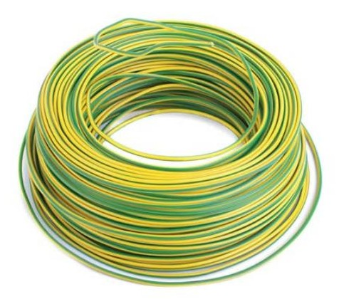
Paso 2 Verificación por medidas o ensayos
La verificación por medidas o ensayos estará basada en la realización de pruebas, normalmente con aparatos de medida, por lo que tiene carácter cuantitativo habitualmente. La posterior verificación de valores permitirá dotar de un carácter de cumple o no cumple en función de los valores establecidos o calculados del reglamento, pero puede considerarse que ya no será una medida única de cumple no cumple, sino que además nos puede dar indicación de cuán buenos o malos son los resultados obtenidos para la instalación, pudiendo clasificar como mejor o peor un determinado parámetro de la instalación y haciéndolo comparable a otras situaciones.
Aunque podrán verse más y en más detalle en secciones posteriores las medidas más importantes a realizar serán las siguientes:
Medida de continuidad de los conductores de protección.
Medida de la resistencia de puesta a tierra.
Medida de la resistencia de aislamiento de los conductores
Medida de la resistencia de aislamiento de suelos y paredes, cuando se utilice este sistema de protección
Medida de la rigidez dieléctrica
Adicionalmente hay que considerar otras medidas y comprobaciones que son necesarias para garantizar que se han adoptado convenientemente los requisitos de protección contra choques eléctricos. Se realizarán una o varias de las medidas indicadas a continuación según el sistema de protección utilizado:
Medida de las corrientes de fuga.
Comprobación de la intensidad de disparo de los diferenciales.
Medida de la impedancia de bucle.
Comprobación de la secuencia de fases.
Las instalaciones eléctricas en baja tensión de especial relevancia deberán ser objeto además de inspecciones por parte de Organismos de Control a modo de inspección externa que dé el visto bueno a las pruebas realizadas por el instalador, a fin de asegurar en la medida de los posible el cumplimiento reglamentario de las instalaciones así como la garantía futura de la instalación.
En la siguiente sección veremos la información contenida en la norma respecto a estas verificaciones y las formas de realizarlas.
4. INSPECCIONES.
Las instalaciones eléctricas en baja tensión de especial relevancia que se citan a continuación, deberán ser objeto de inspección por un Organismo de Control, a fin de asegurar, en la medida de lo posible, el cumplimiento reglamentario a lo largo de la vida de dichas instalaciones.
Las inspecciones podrán ser:
niciales: Antes de la puesta en servicio de las instalaciones.
Periódicas;
4.1. Inspecciones iniciales.
Serán objeto de inspección, una vez ejecutadas las instalaciones, sus ampliaciones o modificaciones de importancia y previamente a ser documentadas ante el Órgano competente de la Comunidad Autónoma, las siguientes instalaciones:
a. Instalaciones industriales que precisen proyecto, con una potencia instalada superior a 100 kW;
b. Locales de Pública Concurrencia;
c. Locales con riesgo de incendio o explosión, de clase I, excepto garajes
de menos de 25 plazas;
d. Locales mojados con potencia instalada superior a 25 kW;
e. Piscinas con potencia instalada superior a 10 kW;
f. Quirófanos y salas de intervención;
g. Instalaciones de alumbrado exterior con potencia instalada superior 5 kW.
4.2. Inspecciones periódicas.
Serán objeto de inspecciones periódicas, cada 5 años, todas las instalaciones eléctricas en baja tensión que precisaron inspección inicial, según el punto 4.1 anterior, y cada 10 años, las comunes de edificios de viviendas de potencia total instalada superior a 100 kW.
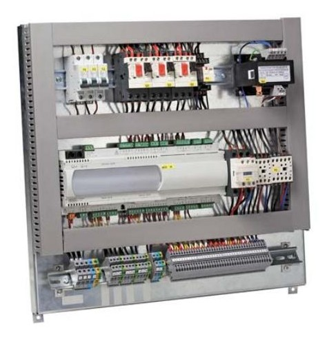
Cuadro control eléctrico con señalización
En cuanto al procedimiento a seguir tendremos:
5. Procedimiento
5.1. Los Organismos de Control realizarán la inspección de las instalaciones
sobre la base de las prescripciones que establezca el Reglamento de aplicación y, en su caso, de lo especificado en la documentación técnica, aplicando los criterios para la clasificación de defectos que se relacionan en el apartado siguiente. La empresa instaladora, si lo estima conveniente, podrá asistir a la realización de estas inspecciones.
5.2. Como resultado de la inspección, el Organismo de Control emitirá un
Certificado de Inspección, en el cual figurarán los datos de identificación de la instalación y la posible relación de defectos, con su clasificación, y la calificación de la instalación, que podrá ser:
5.2.1. Favorable: Cuando no se determine la existencia de ningún defecto
muy grave o grave. En este caso, los posibles defectos leves se anotarán para constancia del titular, con la indicación de que deberá poner los medios para subsanarlos antes de la próxima inspección; Asimismo, podrán
servir de base a efectos estadísticos y de control del buen hacer de las empresas instaladoras.
5.2.2. Condicionada: Cuando se detecte la existencia de, al menos, un de-
fecto grave o defecto leve procedente de otra inspección anterior que no se haya corregido.
En este caso:
a. Las instalaciones nuevas que sean objeto de esta calificación no podrán
ser suministradas de energía eléctrica en tanto no se hayan corregido los defectos indicados y puedan obtener la calificación de favorable.
b. A las instalaciones ya en servicio se les fijará un plazo para proceder a su
corrección, que no podrá superar los 6 meses. Transcurrido dicho plazo sin haberse subsanado los defectos, el Organismo de Control deberá remitir el Certificado con la calificación negativa al Órgano competente de la Comunidad Autónoma.
Recuerda
Un resultado de inspección condicionada no permitirá el suministro a una instalación nueva, en instalaciones existentes habrá de resolverse en el plazo que se establezca para ello.
5.2.3. Negativa: Cuando se observe, al menos, un defecto muy grave.
En este caso:
a. Las nuevas instalaciones no podrán entrar en servicio, en tanto no se hayan corregido los defectos indicados y puedan obtener la calificación de favorable.
b. A las instalaciones ya en servicio se les emitirá Certificado negativo, que se
remitirá inmediatamente al Órgano competente de la Comunidad Autónoma.
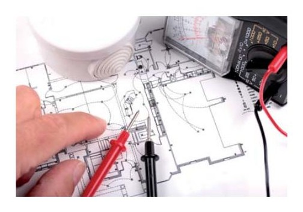
Verificación de plano eléctrico
De forma similar a la normativa para baja tensión se tendrá:
6. Clasificación de defectos.
Los defectos en las instalaciones se clasificarán en: Defectos muy graves, defectos graves y defectos leves.
6.1. Defecto Muy Grave.
Es todo aquél que la razón o la experiencia determina que constituye un peligro inmediato para la seguridad de las personas o los bienes.
Se consideran tales los incumplimientos de las medidas de seguridad que pueden provocar el desencadenamiento de los peligros que se pretenden evitar con tales medidas, en relación con:
Contactos directos, en cualquier tipo de instalación;
Locales de pública concurrencia;
Locales con riesgo de incendio o explosión;
Locales de características especiales;
Instalaciones con fines especiales;
Quirófanos y salas de intervención.
Recuerda
Cualquier defecto muy grave conllevará la desconexión de la instalación.
6.2. Defecto Grave.
Es el que no supone un peligro inmediato para la seguridad de las personas o de los bienes, pero puede serlo al originarse un fallo en la instalación. También se incluye dentro de esta clasificación, el defecto que pueda reducir de modo sustancial la capacidad de utilización de la instalación eléctrica.
Dentro de este grupo y con carácter no exhaustivo, se consideran los siguientes defectos graves:
Falta de conexiones equipotenciales, cuando éstas fueran requeridas;
Inexistencia de medidas adecuadas de seguridad contra contactos indirectos;
Falta de aislamiento de la instalación;
Falta de protección adecuada contra cortocircuitos y sobrecargas en los conductores, en función de la intensidad máxima admisible en los mismos, de acuerdo con sus características y condiciones de instalación;
Falta de continuidad de los conductores de protección;
Valores elevados de resistencia de tierra en relación con las medidas de seguridad adoptadas.
Defectos en la conexión de los conductores de protección a las masas, cuando estas conexiones fueran preceptivas;
Sección insuficiente de los conductores de protección;
Existencia de partes o puntos de la instalación cuya defectuosa ejecución pudiera ser origen de averías o daños;
Naturaleza o características no adecuadas de los conductores utilizados;
Falta de sección de los conductores, en relación con las caídas de tensión admisibles para las cargas previstas;
Falta de identificación de los conductores “neutro” y “de protección”;
Empleo de materiales, aparatos o receptores que no se ajusten a las especificaciones vigentes.
Ampliaciones o modificaciones de una instalación que no se hubieran tramitado según lo establecido en la ITC -BT 04.
Carencia del número de circuitos mínimos estipulados
La sucesiva reiteración o acumulación de defectos leves.
6.3. Defecto Leve.
Es todo aquel que no supone peligro para las personas o los bienes, no perturba el funcionamiento de la instalación y en el que la desviación respecto de lo reglamentado no tiene valor significativo para el uso efectivo o el funcionamiento de la instalación.
A continuación se muestra el esquema de los diferentes casos que pueden darse como resultado de inspecciones:
Esquema de inspecciones de las instalaciones en BT
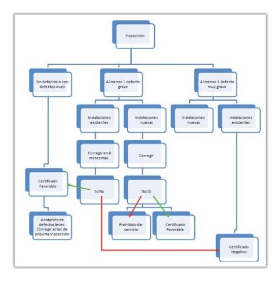
Donde se observa que ninguna instalación con un defecto muy grave puede permanecer en funcionamiento, mientras en el caso de un defecto grave podría permanecer en un determinado plazo.
La detección de un defecto leve permitirá que la instalación funcione, pero quedará indicado para la instalación.
Debe tenerse en cuenta, que en el caso de detectarse un defecto muy grave, grave o repetirse uno leve se requerirá una segunda inspección por parte del Organismo de Control para verificar la resolución del mismo, tanto en el caso de una instalación nueva como de una existente, lo que acarreará mayores gastos de forma directa o indirecta para el promotor o el instalador, cuestión que resulta conveniente evitar.
Verificaciones en función del tipo de instalación
Antes de poder realizar pruebas de equipos e instalaciones habrá de realizarse la verificación comentada en el punto anterior. Las verificaciones a realizar dependerán de los sistemas instalados en nuestro montaje. Se dividirá la instalación según sea de Baja Tensión o partes de Alta Tensión como puedan ser las líneas de distribución que hayan sido necesario instalar o la existencia de Centros de Transformación en el edificio. Estos dos tipos de instalaciones serían tratados de forma separada.
Verificaciones en Baja Tensión
En los casos de Baja Tensión, que en general serán las mayor parte de las instalaciones de los edificios se separarán los protocolos de verificación según el tipo de uso o sistemas instalados.
Hojas de control para verificación de viviendas
Las hojas de control permiten realizar los diagnósticos en base a los requisitos realizando tan sólo la acción de marcar el cumplimiento, el incumplimiento o N/A en caso de “No aplica” al caso de estudio. Dada la facilidad que ofrecen son ampliamente utilizadas en verificaciones.
En el caso de instalación de viviendas tendremos por ejemplo los siguientes bloques de comprobación (Si bien la lista de requisitos no es exhaustiva sino más bien referencia).
Bloques de verificación en instalaciones en viviendas:
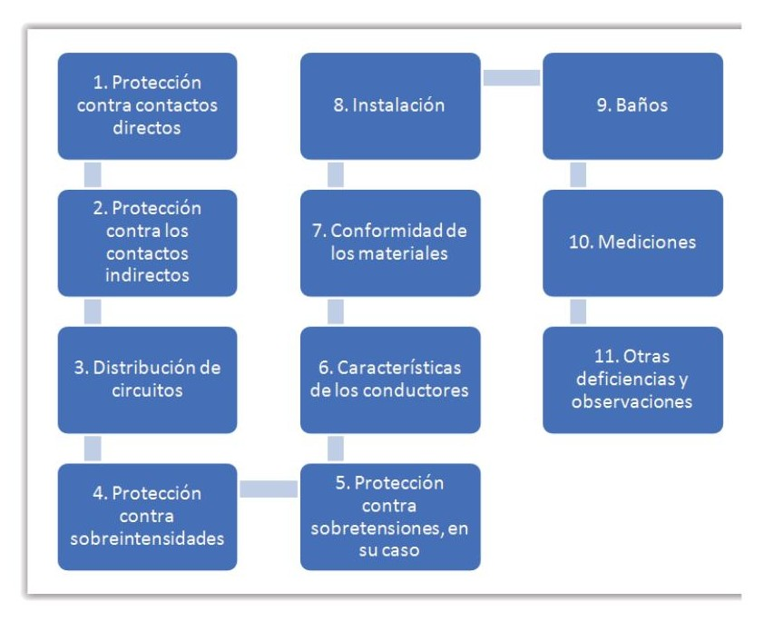
1. Requisitos para hoja de control en instalaciones de viviendas:
Protección contra contactos directos (aislamiento, envolventes, etc.)
Contacto directo: Contacto de personas o animales con partes activas de los materiales y equipos.
Protección contra los contactos indirectos:
Contacto indirecto: Contacto de personas o animales domésticos con partes que se han puesto bajo tensión como resultado de un fallo de aislamiento.
Existencia de red de tierra.
Existencia de unión equipotencial (tuberías metálicas, conductos metálicos accesibles, refuerzos metálicos del hormigón armado, etc.)
Existencia de unión equipotencial suplementaria (baños, intemperie, etc.)
omas de corriente con toma de tierra
Desconexión automática de la alimentación por un diferencial con IΔn ≤ 30 mA
Discriminación entre diferenciales. Diferenciales retardados tipo S
Distribución de circuitos
Presencia de los circuitos mínimos
Máximo de 5 circuitos por cada diferencial. (Nota: Excepto en desdoblamiento circuito C4 y desdoblamiento circuitos C1, C2, C5 si no se supera el número máximo de puntos de utilización)
Protección contra sobreintensidades
Presencia del Interruptor General Automático (IGA)
Interruptores automáticos (PIAs) de corte omnipolar
Protección contra cortocircuitos y sobrecargas al inicio de cada circuito.
Selección apropiada del dispositivo de protección de acuerdo con la sección del conductor:
1,5 mm2 -> PIA: 10 A máximo
2,5 mm2 -> PIA: 16 A máximo
4 mm2 -> PIA: 20 A máximo
6 mm2-> PIA: 25 A máximo
10 mm2-> PIA: 32 A máximo
Protección contra sobretensiones, en su caso.
Características de los conductores:
Conductores aislados de tensión asignada mínima de 450/750 V
Sección mínima de los conductores activos:
C1 y C6 Alumbrado: 1,5 mm2
C2, C5, C7 Y C10 Tomas de corriente 16 A: 2,5 mm2
C4 Lavadora, lavavajillas y termo eléctrico: 4 mm2
C4 Desdoblado: 2,5 mm2
C3, C8 y C9 Horno, calefacción eléctrica y aire acondicionado: 6 mm2
Conductores de protección de la misma sección que los conductores activos
Conductores de tierra o línea de enlace con tierra:
Con protección contra la corrosión: 16 mm2 Cu;
Sin protección contra la corrosión: 25 mm2 Cu; 50 mm2 Fe
Conformidad de los materiales
Tubos, canales, cajas de conexión, protecciones, tomas de corriente, interruptores, etc.
Instalación
Situación y altura del cuadro general de protección
Identificación de los conductores
Identificación de los circuitos
Empotrado: Marcado mínimo tubos 2221 (curvables o flexibles)
Superficiales: Marcado mínimo tubos 4321 (rígidos o curvables), canales protectoras y canalizaciones prefabricadas
Conexión entre conductores de protección y parte metálicas accesibles
Conexión entre cables (regletas de conexión)
Baños
Material eléctrico con un grado de protección adecuado al volumen a ser instalado
-Volumen 0: IPX7
-Volumen 1 y 2: IPX4
-Volumen 3: IPX1
Canalizaciones limitadas a la alimentación de receptores situados en el mismo volumen o en volúmenes de índice inferior.
Tomas de corriente:
-Volumen 2: Protegidas por MBTP (12 V c.c. o 30 V c.a.)
-Volumen 3: Protegidas por separación eléctrica, por MTBP o por diferencial IΔn≤30 mA
Mediciones
Resistencia de tierra: .........fl
Continuidad del conductor de protección:
terminales de tierra de las tomas de corriente
envolventes metálicas de receptores fijos
puntos de luz y placas metálicas de interruptores
Disparo de diferenciales por corriente residual
Resistencia de aislamiento (Ra)
MBTP o MBTS -> Ra ≥ 0,25 Mfl
Un ≤ 500 V -> Ra ≥ 0,5 Mfl
Otras deficiencias y observaciones
Espacio destinado para la redacción de las observaciones u otras deficiencias encontradas durante la verificación.
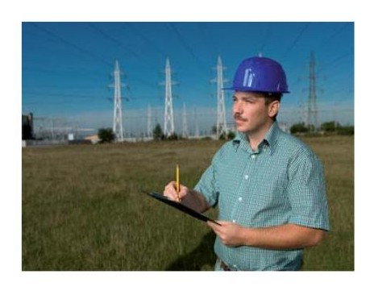
Chequeo mediante hojas de control
Hojas de control para zonas comunes de edificios de viviendas
Para el caso de zonas comunes de viviendas tendremos estos otros requisitos de verificación:
Bloques de verificación en instalaciones en viviendas:
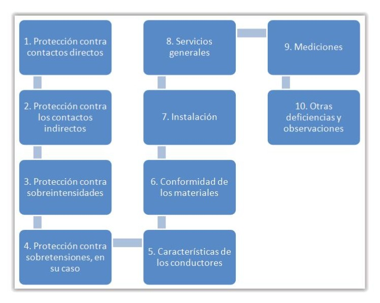
1. Protección contra contactos directos (aislamiento, envolventes, etc.)
2. Protección contra los contactos indirectos:
2.1. Existencia de red de tierra.
2.2 Existencia de unión equipotencial (tuberías metálicas, conductos metálicos accesibles, refuerzos metálicos del hormigón armado, etc.)
2.3. Existencia de unión equipotencial suplementaria (baños, intemperie, etc.)
2.4. Tomas de corriente con toma de tierra
2.5. Desconexión automática de la alimentación por un diferencial con IΔn ≤ 30 mA
2.6. Discriminación entre diferenciales. Diferenciales retardados tipo S
3. Protección contra sobreintensidades
3.1. Presencia del Interruptor General Automático (IGA)
3.2. Interruptores automáticos (PIAs) de corte omnipolar
3.3. Protección contra cortocircuitos y sobrecargas al inicio de cada circuito.
3.4. Selección apropiada del dispositivo de protección de acuerdo con la sección del conductor:
1,5 mm2 -> PIA: 10 A máximo
2,5 mm2 -> PIA: 16 A máximo
4 mm2 -> PIA: 20 A máximo
6 mm2 -> PIA: 25 A máximo
10 mm2 -> PIA: 32 A máximo
4. Protección contra sobretensiones, en su caso
5. Características de los conductores
5.1. Conductores aislados de tensión asignada mínima de 450/750 V
5.2. Sección mínima de los conductores activos:
Alumbrado: 1,5 mm2
Tomas de corriente 16 A: 2,5 mm2
5.3. Conductores de protección de la misma sección que los conductores activos
5.4. Conductores de tierra o línea de enlace con tierra:
Con protección contra la corrosión: 16 mm2 Cu;
Sin protección contra la corrosión: 25 mm2 Cu; 50 mm2 Fe
6. Conformidad de los materiales
6.1. Tubos, canales, cajas de conexión, protecciones, tomas de corriente, interruptores, etc.
7. Instalación
7.1. Situación y altura del cuadro general de protección
7.2. Identificación de los conductores
7.3. Identificación de los circuitos
7.4. Empotrado: Marcado mínimo tubos 2221 (curvables o flexibles)
7.5. Superficiales: Marcado mínimo tubos 4321 (rígidos o curvables), canales protectoras y canalizaciones prefabricadas
7.6. Conexión entre conductores de protección y parte metálicas accesibles.
7.7. Conexión entre cables (regletas de conexión)
8. Servicios generales
8.1. Aparatos de alumbrado de emergencia:
› Funcionamiento de lámparas de señalización
› Funcionamiento de lámparas de emergencia.
› Lux a nivel del suelo (mínimo 1 lux)
9. Mediciones
9.1. Resistencia de tierra: .........fl
9.2. Continuidad del conductor de protección:
-terminales de tierra de las tomas de corriente
-envolventes metálicas de receptores fijos
-puntos de luz y placas metálicas de interruptores
9.3. Disparo de diferenciales por corriente residual
9.4. Resistencia de aislamiento (Ra)
MBTP o MBTS -> Ra ≥ 0,25 Mfl
Un ≤ 500 V -> Ra ≥ 0,5 Mfl
10. Otras deficiencias y observaciones
De los anteriores requisitos de verificación en forma de check-list, se informará según cumplan o no cumplan los requisitos así como las medidas inmediatas si las hubiera.
Similares protocolos pueden establecerse para otros usos como industrias, locales comerciales, etc. En esos casos deberán adaptarse a los circuitos existentes en la instalación y al uso determinado a que se destina la instalación.
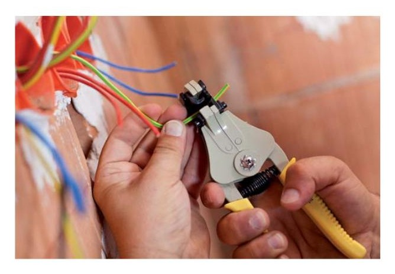
Proceso de conexionado de conductores
Instalaciones en Alta Tensión
Si bien la mayoría de instalaciones en edificios ocurren en Baja Tensión, en muchas ocasiones parte de las instalaciones de alta tensión también están incluidas dentro del montaje de la instalación del edificio o en sus zonas exteriores privativas.
Recuerda
Las instalaciones de Alta Tensión son aquellas en que la tensión alterna supera los 1000 Voltios.
Normalmente serán Centros de Transformación y partes de redes de distribución en Alta tensión. Estos elementos, pueden o no encontrarse cedidos parcialmente (o realizarse así con objeto de cesión a la compañía suministradora, cesiones que pueden ser totales o parciales).
En los casos en que los centros de transformación sean cedidos parcialmente, existirán partes privativas propiedad del titular o promotor de la instalación sobre las habrá de realizarse mantenimiento posterior, siendo el titular de la instalación el responsable de su correcta contratación a empresa habilitada para ello.
En los casos en que existen estos tipos de elementos como parte de la instalación requerirán un protocolo de verificación y control por parte de los instaladores autorizados que los hayan realizado y en todos los casos las obras habrán sido realizadas en base a un proyecto técnico, por lo que poseerán una Dirección de Obras realizada por técnico competente.
Además intervendrán las compañías suministradores eléctricas, que habrán de dar conformidad a los proyectos y ejecuciones antes de pasar a hacerse cargo de todo o parte de la instalación de Alta Tensión.
Líneas de Alta Tensión
En su gran mayoría las líneas de Alta Tensión que se realizan dentro del entorno de edificios tendrán por objeto la cesión a la compañía distribuidora. Puede darse el extraño caso de que un línea de Alta Tensión sea de propiedad privada, pero estos casos acostumbra a ser exclusivamente en entornos rústicos donde pueden requerirse varios kilómetros de líneas de Alta Tensión para acceso a la energía eléctrica y donde no coinciden para ello varios usuarios, pero lo que serán en general poco usuales.
En cuanto a los tramos de líneas en AT, que afecten a nuestro edificio, en la ITC-LAT-05 denominada “VERIFICACIONES E INSPECCIONES”, figura:
2.1 Verificación
Las verificaciones previas a la puesta en servicio de las líneas eléctricas de alta tensión deberán ser realizadas por el titular de la instalación o por personal delegado por el mismo.
Se efectuarán los ensayos previos a la puesta en servicio que establezcan las normas de obligado cumplimiento. En cualquier caso para líneas eléctricas con conductores aislados con pantalla se efectuarán, al menos, los ensayos de comprobación del aislamiento principal y de la cubierta. En las líneas aéreas y en las subterráneas con cables aislados instalados en galerías visitables, se realizarán, además, los ensayos de la medida de resistencia del circuito de puesta a tierra y, en el caso que corresponda, medida de las tensiones de contacto.
Las líneas eléctricas de alta tensión serán objeto de verificaciones periódicas, al menos una vez cada tres años, realizando las comprobaciones que permitan conocer el estado de los diferentes componentes de las mismas. Las verificaciones se podrán sustituir por planes concertados con el órgano competente de la Administración, que garanticen que la línea está correctamente mantenida.
Como resultado de una verificación previa o periódica, la empresa titular emitirá un acta de verificación, en la cual figurarán los datos de identificación de la línea y posible relación de defectos, planes de corrección y, en su caso, observaciones al respecto.
La empresa titular mantendrá una copia del acta de verificación a disposición del órgano competente de la Administración. El acta de verificación podrá ser enviada mediante una transmisión electrónica.
2.2 inspección
Los órganos competentes de la Administración podrán efectuar, por sí mismos o a través de terceros, inspecciones sistemáticas mediante control por muestreo estadístico.
3. Verificación E Inspección DE LAS Líneas ELÉCTRICAS QUE NO
SEAN PROPIEDAD DE EMPRESAS DETRANSPORTEY Distribución DE Energía ELÉCTRICA
Todas las líneas deben ser objeto de una verificación previa a la puesta en servicio y de una inspección periódica, al menos cada tres años. Para las líneas de tensión nominal menor o igual a 30 kV la inspección periódica puede ser sustituida por una verificación periódica. Las líneas de tensión nominal superior a 30 kV deberán ser objeto, también, de una inspección inicial antes de su puesta en servicio. Las verificaciones previas a la puesta en servicio de las líneas eléctricas de alta tensión deberán ser realizadas por las empresas instaladoras autorizadas que las ejecuten.
Sin perjuicio de las atribuciones que, en cualquier caso, ostenta la Administración pública, los agentes que lleven a cabo las inspecciones de las líneas eléctricas de alta tensión de tensión nominal mayor de 30 kV deberán tener la condición de organismos de control, según lo establecido en el Real Decreto 2200/1995, de 28 de diciembre, acreditados para este campo reglamentario.
Las verificaciones periódicas de líneas eléctricas de tensión nominal no superior a 30 kV podrán ser realizadas por técnicos titulados con competencias en este ámbito que dispongan de un certificado de cualificación
individual, expedido por una entidad de certificación de personas acreditada, de acuerdo con el Real Decreto 2200/1995, de 28 de diciembre, y según la norma UNE-EN-ISO/IEC 17024. El certificado de cualificación individual se renovará, al menos, cada tres años. Asimismo, el técnico titulado encargado de la verificación no podrá haber participado ni en la redacción del proyecto, ni en la dirección de obra, ni estar vinculado con el mantenimiento de la línea.
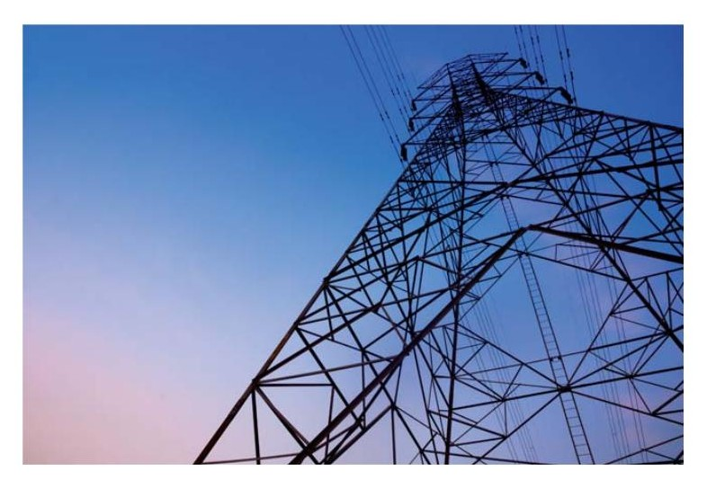
Línea de alta tensión
3.1 Verificaciones
3.1.1 Verificación inicial previa a la puesta en servicio.
Se efectuarán los ensayos previos a la puesta en servicio que establezcan las normas de obligado cumplimiento. En cualquier caso, para líneas eléctricas con conductores aislados con pantalla se efectuarán, al menos, los ensayos de comprobación del aislamiento principal y de la cubierta.
En las líneas aéreas y en las subterráneas con cables aislados instalados en galerías visitables, se realizarán, además, los ensayos de la medida de resistencia del circuito de puesta a tierra y, en el caso que corresponda, medida de las tensiones de contacto.
3.1.2 Verificaciones periódicas.
Para líneas eléctricas con conductores aislados con pantalla se efectuarán, al menos, los ensayos de comprobación del aislamiento principal y de la cubierta. En las líneas aéreas y en las subterráneas con cables aislados instalados en galerías visitables, se realizarán, además, los ensayos de la medida de resistencia del circuito de puesta a tierra y, en el caso que corresponda, medida de las tensiones de contacto.
3.2 Inspecciones
3.2.1 Inspección inicial.
En la inspección inicial se comprobará que los ensayos a realizar por la empresa instaladora, correspondientes a las verificaciones previas a la puesta en servicio, se ejecutan correctamente, con los medios técnicos apropiados yen correcto estado de calibración, así como el resultado obtenido es satisfactorio. También se comprobará que existe coincidencia entre las condiciones reales de tendido con las condiciones de cálculo del proyecto.
3.2.2 Inspección periódica.
Para líneas eléctricas con conductores aislados con pantalla se efectuarán, al menos, los ensayos de comprobación del aislamiento principal y de la cubierta. En las líneas aéreas y en las subterráneas con cables aislados instalados en galerías visitables, se realizarán, además, los ensayos de la medida de resistencia del circuito de puesta a tierra y, en el caso que corresponda, medida de las tensiones de contacto.
3.3 Procedimientos de inspección y verificación
Las inspecciones y verificaciones de las instalaciones se realizarán sobre la base de las prescripciones que establezca la norma de aplicación y, en su caso, de lo especificado en el proyecto, aplicando los criterios para la clasificación de defectos que se relacionan en el apartado siguiente.
3.3.1 Procedimiento de inspección inicial o periódica.
La empresa instaladora que haya ejecutado la instalación o la responsable del mantenimiento, según se trate de inspecciones iniciales o periódicas, deberá asistir al organismo de control para la realización de las pruebas y ensayos necesarios.
Como resultado de la inspección, el agente encargado de la inspección emitirá un certificado de inspección, en el cual figurarán los datos de identificación de la línea y la posible relación de defectos, con su clasificación, y la calificación de la línea, así como el registro de las últimas operaciones de mantenimiento realizadas por la empresa, responsable del mantenimiento de la línea.
3.3.2 Procedimiento de verificación periódica.
La empresa responsable del mantenimiento podrá asistir al técnico titulado competente para la realización de las pruebas y ensayos necesarios.
Como resultado de la verificación, el técnico titulado competente encargado de la verificación emitirá un acta de verificación, en la cual figurarán los datos de identificación de la línea y la posible relación de defectos, con su clasificación, y la calificación de la línea, así como el registro de las últimas operaciones de mantenimiento realizadas por la empresa responsable del mantenimiento de la línea.
3.3.3 Calificación de una línea.
La calificación de una línea, como resultado de una inspección o verificación, podrá ser:
› Favorable: Cuando no se determine la existencia de ningún defecto muy grave o grave. En este caso, los posibles defectos leves se anotarán para constancia del titular.
› Condicionada: Cuando se detecte la existencia de, al menos, un defecto grave o defecto leve procedente de otra inspección anterior que no se haya corregido. En este caso:
› b.1) Las líneas nuevas que sean objeto de esta calificación no podrán ser puestas en servicio en tanto no se hayan corregido los defectos indicados y puedan obtener la calificación de favorable.
› b.2) A las líneas ya en servicio se les fijará un plazo para proceder a su corrección, que no podrá superar los seis meses. Transcurrido dicho plazo sin haberse subsanado los defectos, el organismo de control o el técnico titulado competente encargado de la verificación, según corresponda, deberá remitir el certificado con la calificación negativa al órgano competente de la Administración.
Recuerda
Una calificación condicionada no permitirá a las líneas nuevas la conexión del servicio.
› Negativa: Cuando se observe, al menos, un defecto muy grave. En este caso:
c.1) Las nuevas líneas no podrán entrar en servicio, en tanto no se hayan corregido los defectos indicados y puedan obtener la calificación de favorable.
c.2) A las líneas ya en servicio se les emitirá certificado negativo, que se remitirá inmediatamente, por el organismo de control o el técnico titulado competente encargado de la verificación, según corresponda, al órgano competente de la Administración,
4. Clasificación DE DEFECTOS
Los defectos en las instalaciones se clasificarán en: defectos muy graves, defectos graves y defectos leves.
4.1 Defecto muy grave
Es todo aquél que la razón o la experiencia determina que constituye un peligro inmediato para la seguridad de las personas o los bienes. Se consideran tales los incumplimientos de las medidas de seguridad que pueden provocar el desencadenamiento de los peligros que se pretenden evitar con tales medidas, en relación con:
› Reducción de distancias de seguridad.
› Reducción de distancias de cruzamientos y paralelismos.
› Falta de continuidad del circuito de tierra.
› Tensiones de contacto superiores a los valores límites admisibles.
4.2 Defecto grave
Es el que no supone un peligro inmediato para la seguridad de las personas o de los bienes, pero puede serlo al originarse un fallo en la instalación. También se incluye dentro de esta clasificación, el defecto que pueda reducir de modo sustancial la capacidad de utilización de la instalación eléctrica.
Dentro de este grupo, y con carácter no exhaustivo, se consideran los siguientes defectos graves:
Falta de conexiones equipotenciales, cuando éstas fueran requeridas.
Degradación importante del aislamiento.
Falta de protección adecuada contra cortocircuitos y sobrecargas en los conductores, en función de la intensidad máxima admisible en los mismos, de acuerdo con sus características y condiciones de instalación.
Defectos en la conexión de los conductores de protección a las masas, cuando estas conexiones fueran preceptivas.
Sección insuficiente de los cables y circuitos de tierras.
Existencia de partes o puntos de la línea cuya defectuosa ejecución o mantenimiento pudiera ser origen de averías o daños.
Naturaleza o características no adecuadas de los conductores utilizados.
Empleo de equipos y materiales que no se ajusten a las especificaciones vigentes.
Ampliaciones o modificaciones de una instalación que no se hubieran tramitado según lo establecido en la ITC-LAT 04.
No coincidencia entre las condiciones reales de tendido con las condiciones de cálculo del proyecto (aplicable a líneas aéreas).
La sucesiva reiteración o acumulación de defectos leves.
4.3 Defecto leve
Es todo aquel que no supone peligro para las personas o los bienes, no perturba el funcionamiento de la línea y en el que la desviación respecto de lo reglamentado no tiene valor significativo para el uso efectivo o el funcionamiento de la línea.
Chequeo de recintos de Alta Tensión
Centros de transformación
Los centros de transformación son los recintos donde se encuentran los elementos necesarios para la transformación de la energía eléctrica de Alta Tensión de la red de distribución a la Baja Tensión con la que se alimentan los edificios.
Actualmente la normativa para estos recintos se encuentra en una situación transitoria entre dos Reglamentos. El Real Decreto 337/2014, de 9 de mayo, por el que se aprueban el Reglamento sobre condiciones técnicas y garantías de seguridad en instalaciones eléctricas de alta tensión y sus Instrucciones Técnicas Complementarias ITC-RAT 01 a 23, publicado el 9 de junio de 2014 dispone:
“ElfiReglamento sobre condiciones técnicas y garantías de seguridad en centrales eléctricas, subestaciones y centros de transformación, aprobado por Real Decreto 3275/1982, queda derogado sin perjuicio de su aplicación en los términos de la disposición transitoria primera.1: “Lo dispuesto en el Reglamento sobre condiciones técnicas y garantías de seguridad en instalaciones eléctricas de alta tensión, así como en sus instrucciones técnicas complementarias ITC-RAT 01 a ITC-RAT 23, será de obligado cumplimiento para todas las instalaciones incluidas en su ámbito de aplicación, a partir del 9 de junio de 2016 a excepción del apartado 5 de la ITC-RAT 07, en cuyo caso será el 9 de junio de 2017. Hasta entonces seguirá siendo aplicable el Reglamento sobre condiciones técnicas y garantías de seguridad en centrales eléctricas, subestaciones y centros de transformación, aprobado por Real Decreto 3275/1982, de 12 de noviembre. No obstante, el Reglamento sobre condiciones técnicas y garantías de seguridad que se aprueba por este real decreto, así como sus instrucciones técnicas complementarias ITC-RAT 01 a ITC-RAT 23, se podrán aplicar voluntariamente desde el 9 de diciembre de 2014.”
Esquema Normativo para verificaciones e inspecciones
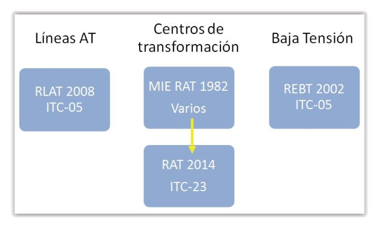
En el artículo 17 de la RAT podemos encontrar:
“Artículo 17. Mantenimiento, verificaciones periódicas e inspecciones de las instalaciones propiedad de entidades de producción, transporte y distribución de energía eléctrica.
1. Las entidades de producción, transporte y distribución de energía eléctrica se responsabilizarán del mantenimiento y verificación periódica de las instalaciones de su propiedad y de aquellas que les sean cedidas. Si el mantenimiento o la verificación fuera realizado por empresas mandatadas, estas deberán ser empresas instaladoras habilitadas en alta tensión, según ITC-RAT 21.
2. La verificación periódica de las instalaciones se realizará, al menos cada tres años. La entidad titular conservará el acta de la verificación y la remitirá a la Administración pública competente.
3. En la ITC-RAT 23 se detalla el proceso para las verificaciones e inspecciones periódicas”
Comentaremos aquí prescripciones generales de las instalaciones interiores recogidas en el Reglamento:
Instrucción Técnica Complementaria ITC-RAT 23
VERIFICACIONES E INSPECCIONES
2. Verificación e inspección de las instalaciones eléctricas propiedad de entidades de producción, transporte y distribución de energía eléctrica
2.1 VERIFICACIÓN
Las verificaciones previas a la puesta en servicio de las instalaciones eléctricas de alta tensión deberán ser realizadas por el titular de la instalación o por una empresa mandataria. Si la verificación fuera realizada por empresas mandatadas, éstas deberán ser empresas instaladoras habilitadas según ITC-RAT 21.
Se efectuarán los ensayos previos a la puesta en servicio que establezcan las normas de obligado cumplimiento. En cualquier caso, en las instalaciones de alta tensión se efectuarán las siguientes verificaciones:
Medidas de las tensiones de paso y contacto, con la particularidad de que en las instalaciones de tercera categoría, se podrá aplicar lo indicado en la ITC-RAT 13.
Verificación de las distancias mínimas de aislamiento en aire entre partes en tensión y entre éstas y tierra, siempre que no se hayan realizado previamente ensayos de aislamiento según lo establecido en la ITC-RAT 12.
Para instalaciones de tensión igual o superior a 220 kV, verificación del estado del aislamiento y en particular de la rigidez dieléctrica de los aislantes líquidos.
Verificación visual y ensayos funcionales del equipo eléctrico y de partes de la instalación.
Pruebas funcionales de los relés de protección y de los enclavamientos montados en obra.
Comprobación de que existen el esquema unifilar de la instalación y los manuales con instrucciones de operación y mantenimiento de los equipos y materiales.
Durante la verificación periódica se revisarán las instalaciones de puesta a tierra a fin de comprobar su estado. Esta revisión consistirá en una inspección visual y en la medida de la resistencia de puesta a tierra, no requiriéndose la medida de la tensión de paso y contacto, salvo en aquellos casos en los que hayan variado las condiciones del proyecto original, debido a variaciones constructivas en el entorno inmediato de la instalación, por ejemplo por disminución de la resistividad superficial, como sucede en caso de ajardinamiento, o por la construcción de nuevos elementos metálicos próximos a la instalación (marquesinas de parada de autobuses, quioscos con elementos metálicos, etc.).
Las verificaciones se podrán sustituir por planes concertados con la Administración pública competente, que garanticen que la instalación está correctamente mantenida.
Como resultado de la verificación, la entidad titular emitirá un Acta de Verificación, en la cual figurarán los datos de identificación de la instalación, la relación de las comprobaciones realizadas, y la posible relación de defectos, planes y plazos de corrección que en el caso de defectos graves o muy graves y para verificaciones periódicas no excederán de seis meses.
La entidad titular enviará una copia del Acta de Verificación a la Administración pública competente en el plazo de un mes desde su ejecución. Este requisito no será necesario en el caso de que la entidad titular disponga de un proceso informático que permita a la Administración pública competente listar y auditar los resultados de las verificaciones efectuadas.
2.2 INSPECCIÓN
La Administración pública competente podrá efectuar inspecciones según establece la legislación sectorial vigente.
3. Verificación e inspección de las instalaciones eléctricas que no sean propiedad de entidades de producción, transporte y distribución de energía eléctrica
Todas las instalaciones de alta tensión deben ser objeto de una verificación previa a la puesta en servicio y de una inspección periódica, al menos cada
tres años. La inspección periódica deberá llevarse a efecto antes de la finalización de la fecha de validez de la anterior inspección. Las instalaciones de tensión nominal superior a 30 kV deberán ser objeto, también, de una inspección inicial antes de su puesta en servicio.
Las verificaciones previas a la puesta en servicio de las instalaciones de alta tensión deberán ser realizadas por las empresas instaladoras que las ejecuten.
Sin perjuicio de las atribuciones que, en cualquier caso, ostenta la Administración pública, los agentes que lleven a cabo las inspecciones de las instalaciones deberán tener la condición de organismos de control, acreditados para este campo reglamentario.
Si la instalación va a ser cedida a una entidad de transporte o distribución, el propietario que cede la instalación deberá justificar a la entidad de transporte o distribución que la puesta en servicio ha sido realizada según el Reglamento sobre condiciones técnicas y garantías de seguridad en instalaciones eléctricas de alta tensión. Además, en la verificación que se realice previamente a la cesión, tendrá que comprobarse también que la instalación está realizada conforme a las especificaciones particulares de la entidad de transporte o distribución, aprobadas por la Administración pública competente y vigentes en el momento de la cesión. En caso de que la instalación no cumpla estos requisitos, la entidad de transporte o distribución podrá exigir al propietario las modificaciones o ensayos correspondientes para cumplir los requisitos.
3.1 Verificaciones
Para la verificación inicial previa a la puesta en servicio se efectuarán los ensayos previos a la puesta en servicio que se indican en el esquema anterior.
3.2 Inspecciones
3.2.1. Inspección inicial.
En la inspección inicial se comprobará que los ensayos a realizar por la empresa instaladora, correspondientes a las verificaciones previas a la puesta en servicio se ejecutan correctamente, con los medios técnicos apropiados y en correcto estado de calibración, así como que el resultado obtenido es satisfactorio. También se comprobará que existe coincidencia entre las condiciones reales de la instalación y las condiciones de cálculo del proyecto, así como que la instalación cumple con las condiciones establecidas en este Reglamento sobre condiciones técnicas y garantías de seguridad en instalaciones eléctricas de alta tensión.
3.2.2. Inspección periódica.
En las instalaciones se efectuarán, como mínimo, las medidas indicadas en el apartado 2.1 para las verificaciones periódicas.
3.3 Procedimiento de inspección y verificación
Las inspecciones y verificaciones de las instalaciones se realizarán sobre la base de las prescripciones que establezca la norma de aplicación, y, en su caso, de lo especificado en el proyecto, aplicando los criterios para la clasificación de defectos que se relacionan en el apartado siguiente.
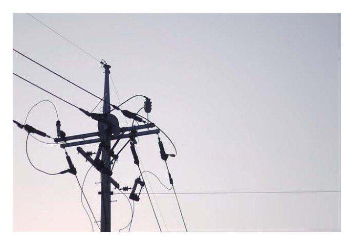
Torre alta tensión
3.3.1 Procedimiento de inspección inicial o periódica.
La empresa instaladora que haya ejecutada la instalación o la responsable del mantenimiento, según se trate de inspecciones iniciales o periódicas, deberá asistir al organismo de control en la realización de las pruebas y ensayos necesarios. En ningún caso esta asistencia supondrá la realización de las operaciones de inspección, medición y control por parte del instalador.
Como resultado de la inspección, el agente encargado de la inspección emitirá un certificado de inspección, en el cual figurarán los datos
de identificación de la instalación, la relación de las comprobaciones realizadas, la posible relación de defectos, con su clasificación, y la calificación de la instalación, planes y plazos de corrección que no excederán de seis meses, así como el registro de las últimas operaciones de mantenimiento realizadas por la empresa responsable del mantenimiento de la instalación.
3.3.2 Calificación de la instalación
La calificación de una instalación, como resultado de una inspección o verificación, podrá ser:
a) Favorable: Cuando no se determine la existencia de ningún defecto muy grave o grave. En este caso, los posibles defectos leves se anotarán para constancia del titular.
b) Condicionada: Cuando se detecte la existencia de, al menos, un defecto grave o defecto leve procedente de otra inspección anterior que no se haya corregido, pero que podría agravarse con el paso del tiempo y poner en riesgo la seguridad de la instalación.
En este caso:
b.1) Las instalaciones nuevas que sean objeto de esta calificación no podrán ser puestas en servicio en tanto no se hayan corregido los defectos indicados y puedan obtener la calificación de favorable.
b.2) A las instalaciones ya en servicio se les fijará un plazo para
proceder a su corrección, que no podrá superar los seis meses. Transcurrido dicho plazo sin haberse subsanado los defectos, el organismo de control deberá remitir el certificado con la calificación negativa a la Administración pública competente.
c) Negativa: Cuando se observe, al menos, un defecto muy grave. En este caso:
c.1) Las nuevas instalaciones no podrán entrar en servicio, en
tanto no se hayan corregido los defectos indicados y puedan obtener la calificación de favorable.
c.2) A las instalaciones ya en servicio se les emitirá certificado
negativo, que se remitirá inmediatamente, por el organismo de control a la Administración pública competente.
4. Clasificación de defectos
Los defectos en las instalaciones se clasificarán en: Defectos muy graves, defectos graves y defectos leves.
4.1 Defecto Muy Grave
Es todo aquél que la razón o la experiencia determina que constituye un riesgo grave e inminente para la seguridad de las personas o los bienes.
Se consideran tales los incumplimientos de las medidas de seguridad que pueden provocar el desencadenamiento de los peligros que se pretenden evitar con tales medidas, en relación con:
a) Reducción de distancias de seguridad o del grado de protección
a la penetración de cuerpos extraños aplicable.
b) Reducción de distancias de aislamiento.
c) Degradación importante o defecto en el aislamiento.
d) Falta de continuidad del circuito de tierra.
e) Tensiones de paso y contacto superiores a los valores límites admisibles.
4.2 Defecto Grave
Es el que no supone un riesgo grave e inminente para la seguridad de las personas o de los bienes, pero puede serlo al originarse un fallo en la instalación. También se incluye dentro de esta clasificación, el defecto que pueda reducir de modo sustancial la capacidad de utilización de la instalación eléctrica.
Dentro de este grupo, y con carácter no exhaustivo, se consideran los siguientes defectos graves:
a) Falta de conexiones equipotenciales, cuando éstas fueran requeridas.
b) Degradación del aislamiento.
c) Falta de protección adecuada contra cortocircuitos y sobrecargas en los materiales, en función de la intensidad máxima
admisible en los mismos, de acuerdo con sus características y condiciones de instalación.
d) Defectos en la conexión de los conductores de protección a
las masas, cuando estas conexiones fueran preceptivas.
e) Sección insuficiente de los cables y circuitos de tierras.
f) Existencia de partes o puntos de la instalación cuya defectuosa
ejecución o mantenimiento pudiera ser origen de averías o daños.
g) Naturaleza o características no adecuadas de los equipos utilizados.
h) Empleo de equipos y materiales que no se ajusten a las especificaciones aplicables.
i) Ampliaciones o modificaciones de una instalación que no se
hubieran tramitado según lo establecido en la ITC-RAT 22.
j) No coincidencia entre las condiciones reales de la instalación
con las condiciones de cálculo del proyecto.
k) Ausencia de las declaraciones de conformidad de los equipos,
o falta de veracidad de las mismas.
l) La sucesiva reiteración o acumulación de defectos leves que
por efecto de su combinación o acumulación supongan un peligro para la seguridad de las personas o de los bienes.
4.3 Defecto Leve.
Es todo aquel que no supone peligro para las personas o los bienes, no perturba el funcionamiento de la instalación y en el que la desviación respecto de lo reglamentado no tiene valor significativo para el uso efectivo o el funcionamiento de la instalación.
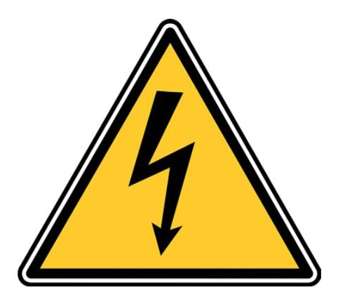
Advertencia Riesgo Eléctrico
5.2. Elaboración de protocolos de procedimientos de:
Definición
Protocolo: Conjunto de normas/reglas que constituyen los requisitos básicos de un determinado proceso o procedimiento.
El conexionado de aparatos receptores, iluminación, motores y equipos, accionamientos, bloqueos, etc., deben someterse a un ensayo funcional, con objeto de verificar que se han montado correctamente, así como regulado e instalado conforme las prescripciones de la Norma UNE 20460 y del fabricante del equipo, si para ellos dispusiera de pruebas de funcionamiento concretas.
Especial hincapié se hará además en los dispositivos de protección y operación de cuadros o paneles de control que deben someterse a ensayos de funcionamiento de forma si cabe más exhaustiva, y si fuera necesario reensayar o sustituir cualquier elemento que genere dudas sobre su correcto funcionamiento o correcta adaptación a la necesidad de protección que cubre.
Por tanto una de las fuentes de datos fundamentales para la preparación de protocolos funcionales partirá de la propia documentación de los equipos y elementos instalados, pues el instalador debe garantizar la consulta y correcto seguimiento de estos documentos.
Muchos equipos que disponen de electrónica interior, motores, compresores de refrigerante, etc. Pueden requerir un protocolo específico de puesta en marcha el cuál conviene comprobar exhaustivamente antes de permitir su suministro eléctrico y puesta en marcha.
También se agregarán otro tipo de pruebas que no se hayan podido comprobar antes de la conexión de la instalación. Detalles de las realizaciones de estas pruebas serán tratados a en secciones siguientes.
En general las pruebas funciones y puesta en marcha se dará en un escenario diferente, pues las pruebas funcionales se realizarán con la instalación en servicio, mientras las verificaciones e inspecciones acostumbran a realizarse sin tensión en la instalación. Como veremos más adelante, esta separación no siempre está completamente clara, pues elementos como por ejemplo las luces de emergencia ya habrán podido tener puesta en marcha sin existir servicio en la instalación, aunque aún habría que testear su correcto funcionamiento en servicio.
Por estos motivos muchas veces los protocolos de pruebas para verificaciones y posterior puesta en marcha y pruebas funcionales se redactan conjuntamente pues la dependencia entre ambos tipos de pruebas es bastante directa.
En cuanto a la Reglamentación para material y equipos eléctricos conviene hacer algunas aclaraciones previas:
Todo el material eléctrico fabricado o comercializado en la Unión Europea posee reglamentos específicos que deben cumplir para poder ser empleados. Desde el punto de vista técnico de una empresa instaladora, debe notarse que la instalación de un aparato o elemento sometido al control normativo específico no constituye una producción del elemento.
La combinación de aparatos certificados y su instalación en un lugar determinado no se considera fabricación (no supone la producción de aparatos,)
luego el resultado de dicha operación es una instalación, que queda fuera del ámbito de aplicación de la Directiva para equipos y materiales eléctricos.
Lo que si debe garantizar el instalador es que los aparatos que inicialmente eran conformes con la Directiva, lo sigan siendo cuando se pongan en servicio, para lo que debe seguir al pie de la letra todas las instrucciones de instalación que proporcionen los fabricantes de estos elementos.
A tenor de lo que el Reglamento impone a los instaladores, la organización deberá desarrollar diferentes protocolos de pruebas funcionales y de puesta en servicio de las instalaciones.
Es obvio que no es posible establecer un protocolo único para todas las instalaciones, pues por ejemplo una instalación de un edificio completo de viviendas, locales o establecimiento industrial no aplicará el mismo protocolo de verificación y pruebas que la reforma de una vivienda única dentro de un edificio existente.
De este modo el alcance del protocolo deberá adaptarse a las necesidades de situaciones diferentes. Para ello habrá de disponerse de un determinado catálogo de pruebas que sirvan de base de datos de donde extraer los contenidos para la elaboración de las pruebas funcionales de cada instalación eléctrica o montaje desarrollado en función de los elementos que se han instalado en ella.
Los criterios de seguridad siempre estarán presentes en estos protocolos y procedimientos pues la seguridad es el factor clave dentro de las pruebas funcionales, así como debe serlo durante la propia instalación.
5.2.1. Pruebas funcionales
Definición
Pruebas funcionales: Las pruebas funcionales serán aquellas pruebas recogidas en un procedimiento por el cual comprobamos que los equipos y elementos instalados funcionan acorde a las especificaciones funcionales y prerrequisitos establecidos.
Requisitos generales a cumplir por elementos eléctricos:
Cables y conductores aislados
Se entiende que los cables que se van a someter a puesta en marcha y pruebas funcionales han sido previamente verificados tanto por inspección como por ensayos. De este modo se habrá garantizado su continuidad correcta así como su correcto aislamiento. Por tanto, los cables no requerirán de pruebas especiales de funcionamiento.
Sin embargo sí serán una parte importante a revisar en cuanto a parámetros térmicos durante las pruebas para comprobar que no están sometidos a temperaturas o corrientes excesivas. Para ellos se está extendiendo el uso de las cámaras termográficas. Este elemento permite observar en tiempo real las emisiones infrarrojas que los cuerpos opacos emiten en virtud de la temperatura que poseen. Como tal no son una medida exacta de la temperatura, pues este valor suele tener que escalarse en función de la emisividad del material, pero en el caso de los cables el campo de temperaturas observado en las cámaras se asemeja bastante al real.
Además su mayor interés no es particularmente el valor exacto de temperaturas, sino la distribución, ya que los comportamiento anómalos suelen coincidir con puntos calientes concentrados (como por ejemplo aquellos casos en que se está produciendo un arco eléctrico bajo el aislante del cable entre dos hilos en virtud de un posible defecto de fabricación o manipulación excesiva en el tendido del cable. La detección de este tipo de defectos a simple vista ha hecho de esta herramienta un gran valor para las pruebas funcionales.
En general los puntos calientes localizados nos darán indicio de que algo no funciona correctamente en la instalación o elemento y nos permitirá dirigirnos a ellos para evaluar si suponen o no un fallo de funcionamiento o instalación del conductor o sus empalmes y derivaciones, resolviendo en parte una de las grandes dificultades que tiene la electricidad para los chequeos, que es el hecho de no ser perceptible por los sentidos.
Iluminación
Caso de dotarse por parte del proyecto de instalación la iluminación, se establecerán para ellas pruebas de funcionamiento así como de rendimiento lumínico y nivel de iluminación suficiente a través de luxómetros. Los luxes son la medida del nivel de iluminación de una zona por unidad de superficie.
Nivel de iluminación (Lux)
Lux= lumen/m2
El proyecto o en su caso la reglamentación particular establecerá este valor para cada espacio en función de su uso o necesidad.
Para luces de emergencia ya fue establecida como verificación por ensayo.
El rendimiento o eficacia lumínica se medirá como:
Rendimiento lumínico:
Rl = lumen/w
Aunque el área de la iluminación de edificios es un tema de gran importancia e interés para los edificios y su uso, no entraremos aquí a valorar aspectos relacionados con temperatura de color, reproducción cromática, intensidad luminosa, etc., así como tipos de lámparas, etc. Debido a su extensión y porque éstos aspectos pertenecen al área del diseño. Tendremos en cuenta que desde el punto de vista de las pruebas funcionales y puesta en marcha será suficiente la comprobación de haber instalado los elementos correctos en cuanto a sus características, el correcto funcionamiento y la obtención de valores de rendimiento y nivel de iluminación esperados por el diseño. La elección correcta de los elementos se considera además una aprobación a realizar a través de la Dirección de obras antes de su instalación.
Motores y equipos
En general en el desarrollo de protocolos de pruebas de equipos y en aquellos casos en que incluyen motores se realizarán en función de las instrucciones de los fabricantes de los mismos. Éstos deberán establecer un protocolo de puesta en marcha.
En los casos de motores trifásicos será de vital importancia antes de su puesta en marcha que la verificación de fases y conexión de los motores se haya realizado conforme a las que especifican el elemento.
5.2.2. Puesta en servicio
Definición
Puesta en servicio: la puesta en servicio será la primara vez que un aparato, utensilio o instalación es utilizado para el uso para el que fue diseñado.
Procedimiento general
El procedimiento general a la hora de configurar el protocolo de pruebas deberá indicar en qué orden deben realizarse las pruebas dentro de una instalación. En general, si partimos de una instalación sobre la que ya se han realizado las verificaciones por examen y ensayos, consideramos que se habrán verificado al menos las siguientes circunstancias:
Correcta continuidad en los conductores
Correcto asilamiento de los conductores
Correcta continuidad a tierra.
Correcto conexionado de los conductores y secuencia de fases
Correcto disparo y corte de las protecciones
En esas circunstancias no deben concurrir situaciones peligrosas para el comienzo del suministro eléctrico a la instalación. Habitualmente este se realizará paso a paso, es decir se comenzará con todos los circuitos y elementos de corte abierto y se establecerá en el protocolo de pruebas la secuencia de conexiones en función de los siguientes principios:
Conectar primero los circuitos primarios: CGP (alimentación de la LGA), IGM (alimentación del embarrado de Centralización de Contadores, etc. siempre abiertos aguas abajo.
En cada paso se realizarán las pruebas y comprobaciones necesarias antes del paso siguiente, y siempre y cuando haya quedado constatado la correcta protección de los circuitos aguas arriba y aguas abajo.
Antes de la conexión de cualquier circuito o receptor debe comprobarse que el circuito que se pretende incluir aguas abajo está abierto inicialmente, y que posee una resistencia mayor a la mínima esperada.
En cada situación en que varios circuitos confluyen en paralelo, por ejemplo, en el Cuadro de Mando y Protección de la vivienda, se alimentarán los circuitos uno a uno y por separado (sin receptores conectados), y una vez verificados todos se establecerá la conexión de todos según la secuencia elegida.
Posteriormente se continuará aguas abajo primero por separado la conexión de receptores circuito a circuito, y finalmente en común.
Por último se realizará las pruebas de todos los circuitos completos, siempre con especial precaución de no superar en las pruebas los parámetros de diseño de la instalación en cuanto a potencia máxima, coeficientes de simultaneidad, poder de corte de elementos, etc.
5.3. Confección del certificado de la instalación
Una vez concluida una intervención eléctrica, el instalador tiene la obligación de tramitar el correspondiente certificado de la instalación.
Esta obligación está establecida en el Reglamento.
Concretamente en la ITC-04 indica:
“5.4 Finalizadas las obras y realizadas las verificaciones e inspección inicial a que se refieren los puntos anteriores, la empresa instaladora deberá emitir un Certificado de Instalación, suscrito por un instalador en baja tensión que pertenezca a la empresa, según modelo establecido por la Administración, que deberá comprender, al menos, lo siguiente:
Los datos referentes a las principales características de la instalación;
La potencia prevista de la instalación;
En su caso, la referencia del certificado del Organismo de Control que hubiera realizado con calificación de resultado favorable, la inspección inicial;
Identificación de la empresa instaladora responsable de la instalación y del instalador en baja tensión que suscribe el certificado de instalación;
declaración expresa de que la instalación ha sido ejecutada de acuerdo con las prescripciones del Reglamento electrotécnico para baja tensión, aprobado por el Real Decreto 842/2002, de 2 de agosto, y, en su caso, con las especificaciones particulares aprobadas a la Compañía eléctrica, así como, según corresponda, con el Proyecto o la Memoria Técnica de Diseño.”
Cada Comunidad Autónoma se encargará de proporcionar el modelo sobre el cual realizar el correspondiente certificado. El certificado de la instalación también se conoce en el argot de instalaciones como “Boletín”, y en el caso de instalaciones nuevas es requisito indispensable para la realización de la contratación del suministro con la Compañía Suministradora correspondiente.
Sobre su confección y dado los diferentes modelos que se dan para comunidad no puede documentarse aquí un modelo único, aunque en su mayoría y desde el punto de vista de esta sección nos centraremos en los datos relativos que habitualmente deben dotarse desde el punto de vista de las verificaciones y pruebas funcionales.
Verificación por pruebas y ensayos:
Como valores numéricos en el certificado de instalación se dotará al menos de:
Medida del valor de resistencia a tierra: (Ω) Se hará constar el valor obtenido en el ensayo correspondiente a la medida de resistencia a tierra.
Medida de la resistencia de aislamiento de los conductores (MΩ ó KΩ): Valor indicado para el ensayo correspondiente al aislamiento de conductores.
Otras pruebas: Se indicarán aquí el valor o la confirmación de realización de otras pruebas que se hayan realizado por parte del instalador, o en su caso se harán constar dentro de los campos observaciones o mediante adición de hojas de control de la verificación.
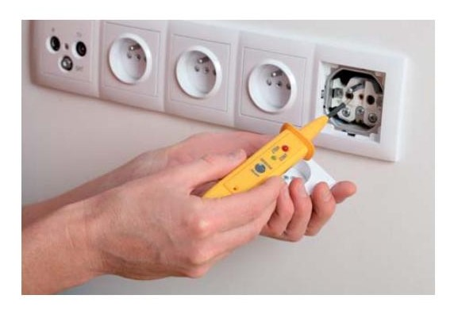
Pruebas eléctricas
De no haberse logrado el cumplimiento de alguno de los valores anteriores no podría darse a trámite el certificado por lo que obviamente se introducirán los datos de los valores obtenidos una vez aplicadas las medidas correctivas necesarias para el cumplimiento Reglamentario de estos valores.
Similarmente las Comunidades proveen de los modelos de documentos necesarios para el registro de instalaciones en Alta Tensión así como AT+BT. Junto a estos documentos irán siempre anexos al resto de requisitos documentales, habitualmente:
Documento de final de obras
Documento de acta favorable de Organismo de Control
Hoja de control de mediciones y ensayos realizados
Etc.
Datos típicos a aportar según el caso serán:
Medición de aislamiento (ITC-MIE-RAT-12)
No de línea
R-S (Megaohmios)
R-T (Megaohmios)
S-T (Megaohmios)
R-TIERRA (Megaohmios)
S-TIERRA (Megaohmios)
T-TIERRA (Megaohmios)
...
Datos del CT
No de CT
No de Transformador
No Serie
Marca
Potencia (kVA)
Año de fabricación
...
Medición de tierras (ITC-MIE-RAT-13)
Neutro (ohmios)
Herrajes (ohmios)
Tensión de paso (Voltios) en caso de necesario
Tensión de contacto (voltios) en caso de necesario
No de apoyo en caso de necesario
....
Definición
Tensión de paso: Es la parte de la tensión a tierra que aparece en caso de un defecto a tierra entre dos puntos del terreno separados un metro.
Tensión de contacto: Es la fracción de la tensión de puesta a tierra que puede ser puenteada por una persona entre la mano y un punto del terreno situado a un metro de separación o entre ambas manos.
En CT y apoyos metálicos la tensión de paso y contacto se medirá únicamente cuando la resistencia de tierra sea mayor que 20 ohmios.
Aunque de nuevo serán las Comunidades las que determinen los modelos exactos de documentos y datos a aportar y por tanto será a ellas donde nos dirijamos para obtener los documentos necesarios para la redacción y entrega del certificado de instalación.
5.4. Seguridad en la puesta en servicio de instalaciones eléctricas
La seguridad en las operaciones que tienen que realizarse en las instalaciones electricidad posee una relevancia vital. La alta gravedad de los accidentes que guardan relación con las instalaciones eléctricas implica una gran necesidad de mantener controlados por peligros de accidentes.
La energía eléctrica es una energía de alta calidad que permite el uso de dispositivos de multitud de aplicaciones. Sin embargo desde el punto de vista de la seguridad posee una serie de inconvenientes como son la falta de percepción por los sentidos y el peligro a su exposición, así como los daños que puede ocasionar por otros efectos indirectos como ser posible fuente de calor, chispas, etc.
Previo al estudio de la seguridad en las operaciones propias de una puesta en servicio de una instalación comentaremos algunos conceptos de especial relevancia para los accidentes de tipo eléctrico.
Las instalaciones eléctricas atesoran relativamente poca siniestralidad dentro del conjunto de la construcción de edificios, sin embargo, presentan una alta gravedad cuando estos accidentes ocurren. Es decir los accidentes eléctricos, son relativamente pocos en número, pero de gran repercusión pues por desgracia una gran parte de ellos causan mortalidad, accidentes graves o grandes desastres como ser origen de grandes incendios de edificios e industrias completos.
Estos aspectos hacen que debamos tener muy en cuenta los riesgos sobre la electricidad y mantener un control correcto y eficaz de medidas preventivas en todo momento, especialmente en aquellos en que el uso rutinario y repetitivo puede derivar en una relajación de los protocolos de seguridad establecidos.
Efectos fisiológicos de la corriente eléctrica
Para que la electricidad produzca efectos en el organismo, el cuerpo humano debe convertirse en parte de un circuito eléctrico. Para que circule corriente por el cuerpo humano deben existir al menos dos puntos que supongan una entrada y salida entre el cuerpo y una fuente eléctrica, a través de un circuito cerrado.
Es afirmación será cierta para que la electricidad produzca un efecto eléctrico directo sobre las personas, sin embargo existen casos en que la electricidad puede producir efectos perniciosos en la salud de forma indirecta, como pueden ser los producido por electricidad como fuente de calor y los derivados de chispazos de arcos eléctricos que pueden afectar también de forma grave sobre ojos, piel, etc. de momento nos estaremos refiriendo a accidentes del primer tipo, en que una corriente atraviesa de algún modo el cuerpo de la persona.
La magnitud de la corriente depende de la diferencia de potencial entre las conexiones activas de entrada salida del cuerpo y de la resistencia eléctrica que el cuerpo posea entre estos dos puntos.
La mayor parte de los tejidos del cuerpo contienen un elevado porcentaje de agua por lo que la resistencia eléctrica que presentan es baja y pueden considerarse como un buen conductor. No obstante, la impedancia de la piel es bastante alta, por lo que se puede considerar que la piel supone una importante protección ante la electricidad. El problema radica en que la superficie de la piel resulta húmeda, por lo que en función de la humedad existente en la zona de entrada o salida de la corriente la resistencia que encontrará la corriente eléctrica puede variar considerablemente.
Los efectos que la corriente eléctrica produce sobre el cuerpo humano dependen fundamentalmente de los siguientes parámetros:
Magnitud de la corriente que circula por el tejido.
Frecuencia de la corriente.
Tiempo de exposición a la corriente eléctrica.
Zonas del cuerpo por las que circula la corriente.
Importante
La relevancia de un accidente eléctrico depende de muchos factores, entre ellos el tiempo de exposición, la corriente, el tipo de corriente (frecuencia), y las zonas del cuerpo por las que circula. Además la corriente que circulará depende de la situación del individuo en ese momento: sudor y humedad en la piel, vestimenta, etc.
La gravedad del daño producido dependerá también del órgano concreto afectado, siendo el más relevante el corazón.
La corriente eléctrica puede afectar al tejido humano principalmente de diversas formas:
En primer lugar se produce una excitación eléctrica de los tejidos excitables (nervios y músculos), comenzando con una sensación de “hormigueo” o “escozor” que si alcanza intensidad suficientemente elevada puede ser dolorosa y molesta. La estimulación de estos nervios o músculos motores puede provocar contracciones y si ésta aumenta puede producirse la tetanización del músculo. Esto produce además un problema añadido, por el cual la persona sometida a la fuente de corriente puede tener dificultades para zafarse por sí solo de la fuente origen de la corriente al contraerse los músculos de la zona del contacto.
De otra parte puede aparecer un incremento de la temperatura del tejido debido a la resistencia que presenta y la energía disipada por el mismo, lo que
produce efectos similares a las quemaduras que se producen por exposiciones al fuego o similares.
Con la corriente eléctrica domestica las quemaduras se limitan por lo general a lesiones localizadas en los puntos de contacto o en sus inmediaciones, lugares donde se produce mayor densidad de corriente, por repartirse todo el flujo eléctrico en una superficie menor.
En los accidentes industriales causados por alta tensión, así como en accidentes por rayos, la energía eléctrica disipada puede provocar quemaduras que afectan a grandes áreas del cuerpo.
El órgano más susceptible a la corriente eléctrica como se ha comentado es el corazón. Una corriente eléctrica que produjera la tetanización del corazón provocaría la contracción completa del mismo que interrumpiría el bombeo de sangre al resto del organismo, lo cual en función del tiempo de exposición a esa corriente produce efectos gravísimos o la muerte del individuo.
Una corriente de intensidad más baja que excite sólo parte de las fibras musculares del corazón puede ser más peligrosa que una corriente suficiente para tetanizar el corazón entero. Esta excitación parcial puede afectar al control del corazón produciendo la pérdida del control de su sincronismo. Este fenómeno en el que el corazón pierde su sincronismo se denomina “fibrilación”. La fibrilación ventricular es la causa que produce la mayoría de las muertes en los accidentes eléctricos.
Inicialmente clasificaremos los rangos de tensión que recoge el reglamento en función de los valores de tensión o diferencia de potencial:
Tensión de seguridad: La tensión de seguridad considerada para ambientes secos y húmedos es 24 voltios.
Alta tensión: Aquella superior a 1000 Voltios de corriente alterna o 1500 en corriente continua.
Baja tensión: Tensiones menores a 1000V en alterna y 1500 V en continua.
Muy baja tensión: Tensiones inferiores a 50 V en alterna, 75 voltios en continua.
Importante
Sólo tensiones por debajo de los 24 V se consideran tensiones seguras.
Corrientes
La magnitud del efecto fisiológico se mide en función de la corriente que atraviesa el cuerpo y no en función de la tensión o potencial que ocurre durante el accidenta. Aunque la corriente pueda depender de la tensión, la gravedad de los accidentes y la percepción del incidente eléctrico dependen de la corriente y no de la tensión.
La gravedad del accidente eléctrico depende de la intensidad que recorre el cuerpo no de la tensión.
Se han establecido por tanto la clasificación de seguridad en función de estos valores de corriente a partir de la siguiente clasificación:
Umbral o nivel de percepción.
Se define como nivel de percepción como la intensidad mínima de corriente que el ser humano es capaz de detectar. Este valor varía en función del sujeto y de las condiciones de medida y oscila entre0.5 mA y 10mA para la tensión de alterna de la red (50hz) y entre 2 y 10 mA para corriente continua.
La Norma UNE 20572- estableció este valor en condiciones generales en 0,5 mA.
Corriente de pérdida del control motor.
Para niveles superiores de corriente, los nervios y músculos pueden excitarse y provocar contracciones que pueden llegar a ser dolorosas y ocasionar pérdida del control muscular.
Los valores de corriente que producen pérdida de control motor oscilan entre 6 y 16 mA.
La Norma UNE 20572-1 estableció este valor en condiciones generales en 10 mA.
Parálisis respiratoria, dolor y fatiga.
Para valores más elevados de corriente, entre 18 y 22 mA aparecen contracciones involuntarias de los músculos respiratorios, provocando situaciones de asfixia si la corriente no se interrumpe.
Contracciones fuertes involuntarias de los músculos y estimulación de los nervios pueden provocar dolores y causar fatiga si permanecen expuestos a la corriente eléctrica durante largo tiempo.
No obstante estos efectos dependen de multitud de variables circunstanciales.
Fibrilación ventricular.
Corrientes mayores pueden dar origen a pérdidas de sincronismo de las diferentes fibras que constituyen el músculo cardiaco. Una vez se pierde la sincronía de la actividad ventricular (fibrilación ventricular), el proceso no se detiene aunque desaparezca la causa que lo provocó, el corazón deja de funcionar como bomba ocasionando una parada en la circulación sanguínea y la muerte súbita si no se consigue la reversión inmediata.
Puede volverse a recuperar la actividad normal del corazón si se aplica un pulso de gran corriente durante un corto intervalo de tiempo que despolarice todas las células del músculo cardiaco. El equipo diseñado para este fin se denomina “desfibrilador”. El nivel de corriente que puede producir fibrilación varía por multitud de causas.
La Norma UNE 20572-1 establece en función de una serie de parámetros la probabilidad de sufrir fibrilación ventricular.
En corriente alterna de 50 Hz, el umbral de fibrilación decrece considerablemente si la duración del paso de la corriente se prolonga más allá de un ciclo cardíaco. Para duraciones inferiores a 0,1 s se puede sufrir fibrilación con intensidades de corriente del orden o superiores a 500 mA si el accidente se produce durante el periodo vulnerable.
La fibrilación ventricular está considerada como la principal causa de muerte por accidente eléctrico.
Contracción del miocardio sostenida.
Cuando la corriente es suficientemente elevada, el músculo entero del corazón se contrae. Aunque el corazón deja de latir mientras la corriente se aplica, cuando esta cesa, vuelve el ritmo normal. El margen de corriente que produce una contracción sostenida del miocardio oscila entre 1 y 6 A.
Daños físicos y quemaduras.
Los efectos de la corriente cuando ésta excede de 10a son poco conocidos, sobretodo en corriente de corta duración. La resistencia que ofrece el cuerpo humano causa quemaduras, principalmente sobre la piel y en los puntos de entrada de la corriente, puesto que la densidad de corriente en la piel es muy elevada y es donde se disipa mayor potencia.
La protección y seguridad para evitar los accidentes eléctricos radican en un escrupuloso cumplimiento de las normas de seguridad durante los trabajos.
Las cinco reglas de oro para la protección ante accidentes eléctricos determinan:
| Regla de oro | Medida de seguridad |
|---|---|
| 1.ª regla de oro | Abrir con corte visible todas las fuentes de tensión mediante interruptoras y seccionadores que aseguren la imposibilidad de su cierre indeseado. |
| 2.ª regla de oro | Enclavamiento o bloqueo, si es posible, de los aparatos de corte y señalización en el mando de éstos. |
| 3.ª regla de oro | Reconocimiento de la ausencia de tensión. |
| 4.ª regla de oro | Puesta a tierra y en cortocircuito de todas las posibles fuentes de tensión. |
| 5.ª regla de oro | Colocar las señales de seguridad adecuadas, delimitando la zona de trabajo. |
1a REGLA DE ORO
Cuando hablamos de abrir con corte visible estamos ejerciendo la apertura de modo que desde la posición de trabajo pueda observarse que nadie haya cerrado el interruptor del circuito donde estamos trabajando.
2a REGLA DE ORO
Enclavamiento o bloqueo, si es posible, de los aparatos de corte y señalización en el mando de éstos. Muchos interruptores y seccionadores incluyen enclavamientos o la posibilidad de realizar éstos a través de otros elementos como candados, cables de acero, pasadores, etc. que permiten el bloqueo de los mismos en posición abierta de modo que evite que puedan volver a ser accionados accidentalmente o por despiste por parte de otros operarios.
3a REGLA DE ORO
Reconocimiento de la ausencia de tensión. A través de medida con instrumentos detectores de tensión: buscapolos, multímetros (voltímetros) o similares debe verificarse la ausencia de tensión antes de realizar cualquier trabajo sobre elementos con posibilidad de estar en tensión.
4a REGLA DE ORO
Puesta a tierra y en cortocircuito de todas las posibles fuentes de tensión. La puesta a tierra en cortocircuito de partes de la instalación con una resistencia pequeña asegurará que no se alcancen tensiones peligrosas en partes susceptibles de estar en tensión.
5a REGLA DE ORO
Colocar las señales de seguridad adecuadas, delimitando la zona de trabajo. La señalización, sobre todo en grandes montajes donde puede confluir multitud de personal de diferentes organizaciones, exteriores, zonas públicas, etc. resulta fundamental para limitar el acceso e informar al resto de personas de la realización de trabajos eléctricos en un lugar.
Otras normas de seguridad
Además de las cinco reglas de oro de aplicación general a trabajos eléctricos habrá que tener en cuenta otras muchas normas y reglas de seguridad que deben aplicarse a trabajos eléctricos en general y a pruebas y puestas en marcha en particular como son:
Únicamente personal autorizado podrá reparar y/o instalar o modificar instalaciones y equipos eléctricos. Deberán emplearse EPIs (Equipos de protección individual) acordes a los trabajos que se van a realizar, debiendo cumplir éstos las exigencias del marcado CE y encontrarse en perfectas condiciones de uso. Todo equipo de protección que no se encuentre en perfecto estado deberá ser desechado inmediatamente, siendo reemplazado por equipo nuevo.
Los destornilladores con refuerzo de metal en los mangos, pinzas sin aislamiento, cuchillos de bolsillo, linternas de metal o centímetros metalizados, resultan peligrosos cuando se trabaja en instalaciones eléctricas, por lo que se emplearán exclusivamente herramientas acordes a los trabajos que se realizan en las instalaciones.
Cuando se trabaje cerca de circuitos eléctricos, deberá tenerse extremo cuidado en el manejo de las herramientas, para evitar cortocircuitos, caídas sobre elementos en tensión, etc.
No debe bajarse la guardia en trabajos con voltajes menores a los habituales, pues éstos también han producido accidentes.
Cualquier circuito que haya sido modificado, reparado o manipulado debe considerarse como circuito no revisado y por tanto deben aplicarse de nuevo los principio de verificación por examen e incluso por ensayo si se resulta necesario.
Cuando se efectúan trabajos sobre las instalaciones eléctricas de un edificio o en una zona el personal debe informar a los usuarios del edificio o zona además de colocar las señalizaciones y delimitaciones necesarias.
Antes de abrir o cerrar una llave, deberá determinarse que las condiciones operativas del circuito permiten la operación sin riesgo.
Equipos de protección en el trabajo eléctrico
Las llaves deberán abrirse o cerrase con firmeza y totalmente. Se considera como una mala práctica la colocación progresiva de los interruptores o seccionadores. Estas operaciones deben realizarse de modo decidido una vez verificado que la operación puede realizarse.
Los interruptores o llaves de corte deberán encontrarse completamente abiertos antes situar o extraer los fusibles. En la operación de extracción se retirará primero el extremo más cercano a la fuente de energía, mientras en la colocación se insertará primero el extremo más alejado.
Los utensilios de limpieza que se empleen también deberán estar adaptados a los trabajos eléctricos, de modo que serán de materiales no conductores (gomas, plásticos, etc.)
Deberán usarse los guantes de goma apropiados a las tensiones de trabajo según especificación del fabricante.
Los guantes deberán revisarse antes de cada trabajo y volver a revisarse durante y después de los trabajos. Será necesario usar talco y limpiarlos con regularidad para evitar que la humedad o residuos se vayan acumulando en los mismos.
Aquellas partes de la instalación que se encuentren cerradas o protegidas mediante llaves o similares medios de cierre no deberán dejarse abiertos sin vigilancia durante la ejecución de trabajos eléctricos en otros lugares.
Todos los cuadros de mando o paneles electicos estarán exentos de otros elementos como herramientas, trapos, documentos, etc.
Todos los cuadros de mando o paneles eléctricos estarán señalizados con cartel de advertencias de “Riesgo eléctrico”.
Los conductores eléctricos no deben ser divididos. Deberán usarse secciones completas en todos los tramos. Está prohibido el montaje y el uso de cables con clavijas macho en ambos extremos para operaciones eléctricas.
Deberá mantenerse en todo momento la conexión a tierra de todos los elementos o equipos por lo que no deben emplearse cables temporales que no incluyan el cable de protección ni clavijas antiguas que no dispongan de él.
Los conductores a tierra deberán ser identificados. No puede emplearse el cable amarillo de línea verde para otro uso que no sea el de protección.
No se debe operar cuadro o panel eléctrico circuitos y equipos alimentados no son visibles desde el cuadro si no se tienen la absoluta constancia de que existe la información al resto de personas implicadas en estos equipos. Debe comentarse cualquier operación de un cuadro a todos los responsables que puedan estar afectados como el responsable de dicho equipo o instalación.
La coordinación con el resto del equipo en los casos de pruebas que requieren tensión debe ser constante y resultar seguros los medios de comunicación e información de cada operación que se va a realizar.
Se tendrá especial precaución en los trabajos de pruebas con la presencia de humedades, productos líquidos, químicos, vapores, etc.
Todo el personal no involucrado en los trabajos eléctricos, deberá salir del área de trabajo de la zona de personal especializado mientras se realizan operaciones.
En el caso de equipos que poseen condensadores se tendrá en cuenta el hecho de que puede existir energía eléctrica acumulada en ellos lo que será tenido en cuenta antes de estar segura las operaciones que implican estos equipos de que no existe la posibilidad de alimentación desde ellos a otros circuitos, o sobre ellos mismos.
Las escaleras empleadas en trabajos eléctricos deben ser de materiales no conductores y estar exentas de herrajes, tornillos, etc. cuyo desprendimiento puede provocar accidentes eléctricos.
Toda instalación será considerada bajo tensión mientas no se pruebe lo contrario mediante medición con aparato adecuado, y volverá a considerarse en tensión después de la realización de cualquier operación sobre interruptores o seccionadores.
Se debe tener especial atención sobre no bajar la guardia en las medidas de seguridad según se van desarrollando las actividades. La posibilidad de accidente crece según crece nuestra percepción de seguridad sobre los trabajos y su rutina, hecho que conlleva una relajación que aumenta el riesgo de sufrir accidentes de forma exponencial.
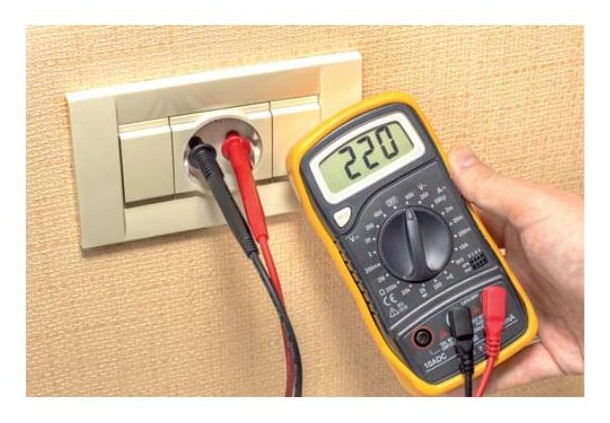
Comprobación de existencia de tensión
5.5. Control de puntos críticos
Un Punto de Control Crítico (PCC) es un punto, operación o etapa que requiere un control eficaz para eliminar o minimizar hasta niveles aceptables un “peligro para la seguridad humana”. Aunque inicialmente se aplicó a productos alimenticios y medicinales, la forma del estudio se ha venido extendiendo a otros ámbitos en relación con la seguridad humana.
El estudio a través de puntos de control críticos es una operativa empleada para localizar de forma sistemática puntos que resultarán críticos para la seguridad humana con objeto de centrar esfuerzos en aquellos puntos que por sí solos pueden producir accidentes desclasificando aquellos otros que su defecto quedará cubierto por otros medios de seguridad que deberían fallar a la vez para que supongan puntos críticos.
Evaluación de peligros y fases
Inicialmente deben identificarse los distintos peligros y distintas fases de la instalación.
Por peligros entenderemos aquellos riesgos que puedan provocar lesiones, heridas o daños a las personas. Dejaremos fuera de este estudio aquellos
daños que se provoquen sobre la propia instalación si éstos no implican peligro para las personas. Es decir, el estudio de peligros para puntos críticos se centrará en el daño a las personas.
Ejemplo:
Peligros:
Peligros para las personas podrán ser: el contacto directo, el contacto indirecto, los peligros por chispas fogonazos, etc.
Por ejemplo, un fusible situado en el embarrado de la centralización de contadores servirá para proteger de sobreintensidades a la derivación individual. El peligro que puede generar para las personas el contacto directo aguas debajo de un individuo no está protegido por ese fusible, por lo que el fusible en sí no es una medida de protección contra contacto directo de las personas en la derivación individual. Sin embargo, sí lo es el aislamiento de los conductores de la derivación individual, o el hecho de que las tapas que cubren los registros a la misma están protegidas por llaves.
Se realizará una tabla que refleje los peligros por fases de la instalación. Cuando hablamos de fases en el estudio de puntos críticos de control nos estaremos refiriendo a los distintos tramos significativos de la instalación ya finalizada, la cual estamos evaluando la seguridad de cara a la entrega a los usuarios finales (no a las fases de montaje como hacíamos en el caso del estudio de la planificación del montaje o del plan de calidad del montaje).
Ejemplo:
Fases:
Podrán ser: canalizaciones exteriores, CGP, LGA, CC, DI, circuitos interiores, etc.
La evaluación de los puntos críticos se realizará entonces por cada línea de peligros vs fases de la instalación. Previo a la realización de la evaluación de punto críticos, se determinará la relevancia de cada peligro vs fase a través de la probabilidad de que se dé ese peligro en esa fase y la gravedad del peligro a través de una ponderación numérica de ambos valores. En esta ponderación se tendrá en cuenta la existencia de las medidas preventivas que existan para control del peligro en esa fase, de modo que la ponderación de la probabilidad y gravedad del suceso estará en función de las medidas preventivas adoptadas para el control de ese peligro en esa fase.
Peligros contra fases (Probabilidad, Gravedad)
| Contacto indirecto | Derivación individual | Aislamiento, limitación acceso por barreras a usuario doméstico | Baja | Media |
|---|---|---|---|---|
| Contacto directo | Circuito interior | Aislamiento, limitación acceso a usuario doméstico | Media | Media |
| Contacto indirecto | Circuito interior | Aislamiento, Protección diferencial | Media | Media |
Para la ponderación numérica de los valores de probabilidad y gravedad se empleará una escala numérica. Esta escala podría ser por ejemplo:
Escala numérica de ponderación:
Valor Probabilidad Gravedad Baja 1 1 Media 2 2 Alta 3 3 Muy alta 4 4
Con ello obtendremos los diferentes valores de probabilidad y gravedad para cada peligro Vs fase.
Peligros contra fases ponderados
| Contacto indirecto | Derivación individual | Aislamiento, limitación acceso por barreras a usuario doméstico | 3 |
|---|---|---|---|
| Contacto directo | Circuito interior | Aislamiento, limitación acceso a usuario doméstico | 4 |
| Contacto indirecto | Circuito interior | Aislamiento, Protección diferencial | 4 |
Para aquellos peligros que resulten más significantes se evaluará la posibilidad de que constituyan un PCC dentro del proyecto.
Las preguntas que deberemos hacernos para ver si un punto de control resulta crítico o no serán:
¿Existen medidas preventivas para el peligro?
¿Ha sido el punto específicamente concebido para eliminar o reducir a un nivel aceptable la posible presencia de un peligro?
¿Podría producirse un peligro superior a los niveles aceptables o podrían aumentar a niveles inaceptables?
¿Se eliminarán los peligros identificados o se reducirá su posible presencia a un nivel aceptable en una fase posterior?
Para poder determinar los PCC se precisa un modo de proceder lógico y sistematizado, como el uso de un árbol de decisiones, el cual es una secuencia de preguntas hechas para determinar si un punto de control es PCC o no lo es.
En cada una de las etapas, el árbol de decisiones, se debe aplicar a cada uno de los peligros identificados y a sus medidas preventivas o de protección.
Las anteriores preguntas se tomarán en un árbol de decisiones a través de las respuestas obtenidas para la determinación de si un determinado elemento de la instalación resulta o no crítico para la seguridad de la instalación.
Determinación de PCC
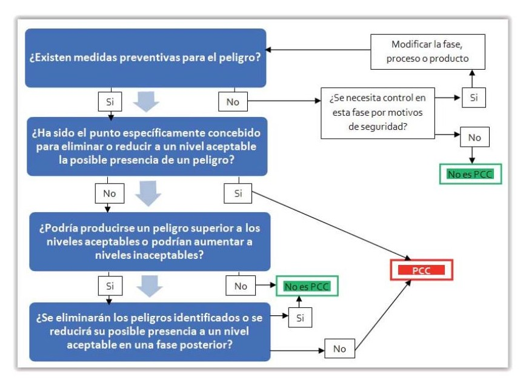
La aplicación del árbol lógico anterior a cada parte de la instalación determina la existencia del punto crítico o no para cada peligro contra fase evaluado.
Puntos críticos típicos podrían ser por ejemplo la protección diferencial en caso de viviendas, la existencia de una continuidad a tierra adecuada, etc.
En cualquier caso la aplicación del método establecerá la existencia de los puntos críticos en cualquier instalación en general, y permitirá además la determinación de la importancia relativa de estos peligros en función de las fases o partes de la instalación.
Este árbol de decisiones se aplicará con flexibilidad y sentido común, sin perder la visión del conjunto del proceso que estamos evaluando.
Es importante también que el análisis que se realice mantenga el objetivo de la seguridad humana y no otros aspectos de control técnicos, para separar el análisis que realizamos entre el de la evaluación de la seguridad humana de otros aspectos relacionados con la calidad de los trabajos y otros aspectos de cumplimiento normativo que no afectan directamente a la seguridad.
A veces sucede que se establecen demasiados PCC con el objeto de garantizar con la máxima seguridad de las instalaciones. Esto produciría que se perdiera el verdadero objeto del análisis. Por otro lado, escasos PCC pueden conducir a que un peligro esencial para la seguridad de los usuarios de instalaciones eléctricas ejecutadas por una organización.
Este tipo de análisis se realiza en otras áreas diferentes a las eléctricas, como la alimentación, medicamentos, etc. El objetivo es el de garantizar la inocuidad y minimizar el riesgo para usuarios de materiales, equipos, artículos, etc. y se busca una estandarización en los estudios de este tipo.
Evaluación de un peligro contra una fase
Supongamos que evaluamos el punto de control de la protección diferencial del Cuadro de Mando y protección de una vivienda, por haber constituido en el estudio de peligros contra fases un peligro significante en la fase aguas debajo del ICP (Interruptor de control de potencia).
La aplicación del árbol de decisiones para el elemento protector nos daría (se muestra el flujo en amarillo):
Determinación de PCC, peligro: contacto indirecto, fase CMGP
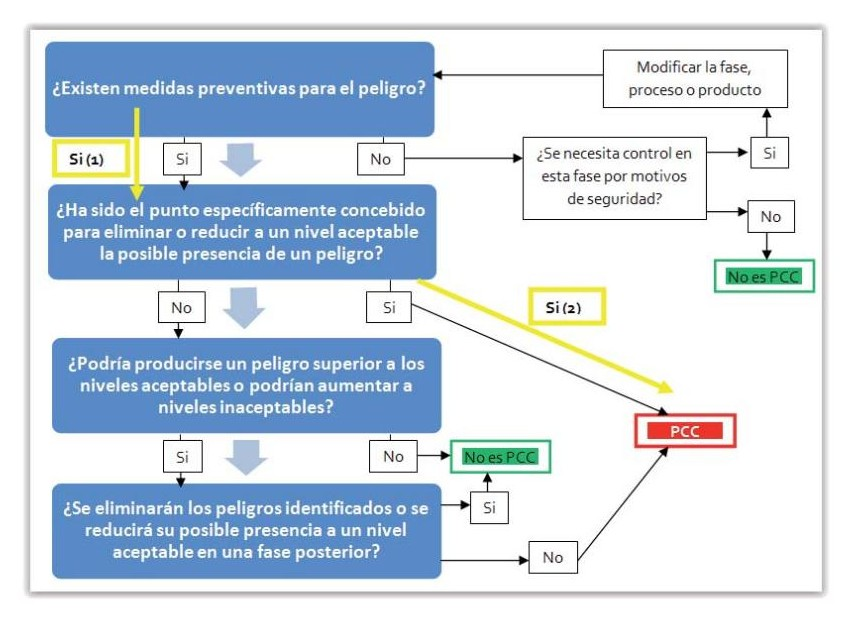
La aplicación del árbol lógico anterior a la protección diferencial en el CGMP nos implicaría un punto de control crítico.
Las evaluaciones se realizarán de modo semejante para el resto de puntos significantes que hayamos hallado y sean susceptibles de resultar críticos, para a posteriori permitir el análisis de los mismos y de sus medidas preventivas.
5.6. Análisis de puntos de control críticos
Una vez aplicado el procedimiento anterior se habrán obtenido aquellos puntos que resultan críticos para la seguridad. El paso posterior será analizar y establecer las medidas preventivas necesarias para mantener el control correcto del punto que resulta crítico para la seguridad.
Si se determina la existencia de un peligro en una fase y no existe ninguna otra medida preventiva que permita controlarlo o mantenerlo en un nivel aceptable, debe realizarse una modificación del producto o proceso que permita modificar o asegurar la correspondiente medida preventiva para lograr que el PCC quede controlado. En caso de PCC donde ya existen medidas preventivas debe analizarse que éstas sean eficaces, o incluso pueden tomarse nuevas medidas encaminadas a eliminar los motivos por los que este punto llegó a resultar crítico.
Es el caso de protecciones mediante esquema TT y diferencial en aislamiento clase I. Si por ejemplo se decide en aquella fase de la instalación donde es PCC la protección contra contacto indirecto, puede resolverse mediante aplicación de materiales clase II (doble aislamiento).
Definición
Dispositivo de Clase II o aparato con doble aislamiento eléctrico es uno que ha sido diseñado de tal forma que no requiere una toma a tierra de seguridad eléctrica. El requisito básico es que un fallo simple no puede dar lugar a tensiones peligrosas que se exponga lo que podría causar una descarga eléctrica y que esto se logra sin depender de una caja metálica conectada a tierra. Esto se consigue normalmente por que tiene dos capas de material aislante que rodea las partes con tensiones peligrosas o utilizando un aislamiento reforzado.
Es ese caso, la protección contra contacto indirecto en esa fase quedaría fuera del árbol de decisiones por el siguiente esquema de flujo en el árbol:
Determinación de PCC, peligro: contacto indirecto, fase CMGP caso doble aislamiento
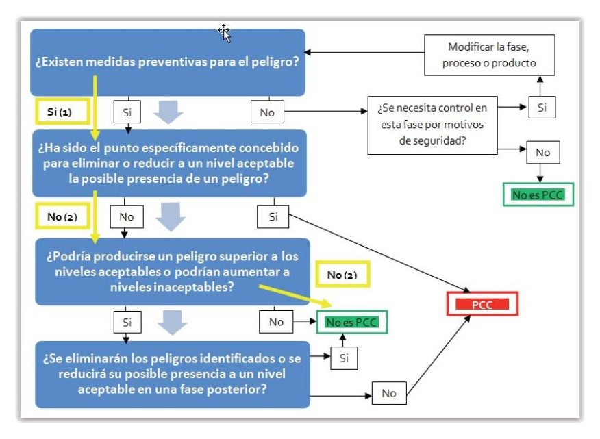
La aplicación del árbol lógico anterior a la protección diferencial en el CGMP ya no implicaría un punto de control crítico, puesto que en el caso de la pregunta 2 en el árbol:
¿Ha sido el punto específicamente concebido para eliminar o reducir a un nivel aceptable la posible presencia de un peligro?
La respuesta sería no, pues el peligro ya está considerado controlado a un nivel aceptable gracias al empleo del doble asilamiento.
En el caso de la pregunta 3 tendríamos:
¿Podría producirse un peligro superior a los niveles aceptables o podrían aumentar a niveles inaceptables?
De nuevo se consideraría que no, pues el nivel aceptable para el peligro no aumentaría a un nivel superior mientras se haya optado por doble aislamiento.
Incluso puede verse que la pregunta 4:
¿Se eliminarán los peligros identificados o se reducirá su posible presencia a un nivel aceptable en una fase posterior?
Tendría por respuesta Sí, que volvería a implicar el valor No es PCC para el peligro significante de contacto indirecto en esa fase.
Otro modo de mantener el control de los puntos críticos puede ser establecer planes encaminados a garantizar el correcto control, por ejemplo en el caso anterior podrían instalarse diferenciales en serie en los circuitos sensibles o establecer otras formas de asegurar el control del peligro de contacto indirecto como circuitos a muy baja tensión, o planes de formación a usuarios para asegurar el control del elementos protector en el tiempo, etc.
5.7. Estudio de métodos de control
Los estudios de métodos de control son metodologías que persiguen producir un control de peligros presentes y futuros sobre una instalación o equipo asegurando sus medidas de control. De modo similar al estudio de los puntos de control críticos (PCC), pretenden ser metodologías que ayuden a los responsables de seguridad a implementar métodos sistemáticos que permitan establecer una seguridad eficaz, evitando que se dejen atrás aspectos relevantes por simple falta de observación de fenómenos o relajación de los usuarios.
El Instituto Nacional de Seguridad e Higiene en el Trabajo estableció un procedimiento para implementar correctamente los estudios de métodos de control a través de realizarnos preguntas sobre qué ocurre en cada caso que puede darse alrededor de las operaciones normales y rutinarias que se realizan en el trabajo.
Descripción del método ¿Qué pasa si...?
El procedimiento consiste en los siguientes pasos:
1 Definir la actividad de interés
2. Recolectar la información necesaria
3 Subdividir la actividad o sistema para el análisis
4 Generarnos las preguntas ¿Qué pasa si...?
5 Responder a las preguntas ¿Qué pasa si...?
6 Realizar las subdivisiones necesarias del problema en función de las necesidades halladas
7 Usar los resultados en la toma de decisiones
Identificar los peligros
Se buscará los peligros a los que se exponen las personas en el problema de interés que estemos evaluando. Peligros pueden ser:
Exposiciones a contactos directos
Exposiciones a contactos indirectos
Exposición a fuentes de calor
Exposición a chispas o arcos eléctricos
Exposición a accidentes mecánicos (motores y elementos en movimiento)
Etc.
Recolectar la información necesaria
Será necesario recoger toda la información posible acerca de los elementos y trabajos que se evalúan así como las medidas de control preexistentes.
La aplicación del método se recomienda que sea realizada por personal que tenga suficiente experiencia y formación en el proceso que se está evaluando, incluso tenga cierto contacto con las personas que lo realizan con objeto de que pueda recolectar suficiente información y tener suficiente cercanía con la rutina y operativa habitual de los trabajos que se están evaluando.
Subdividir la actividad o sistema para el análisis
La evaluación de los métodos de control habrá de realizarse en divisiones razonables del peligro y fase que quieren controlarse. Una división excesiva
desvirtuaría y complicaría la aplicación del método, mientras una división demasiado genérica podría dejar atrás ciertos aspectos relevantes para el estudio de los métodos de control. Esta división realizad aquí la consideraremos una división inicial que en posteriores fases puede ser modificada en función de los razonamientos que se hallen en fases posteriores.
Generarnos las preguntas ¿Qué pasa si...?
Para cada subdivisión realizada en el apartado anterior lanzaremos preguntas del tipo ¿Qué pasa si....? que permita analizar las consecuencias de cada acto o escenario que pudiera darse para un peligro.
Ejemplos:
¿Qué pasa sí el Interruptor Diferencial de un CGMP de la vivienda deja de operar permaneciendo cerrado?
¿Qué pasa sí un interruptor abierto durante una operación de mantenimiento es accionado por un usuario que desconoce que se están realzando trabajos aguas abajo?
¿Qué pasa sí sobre unos guantes se ha derramado un producto líquido conductor?
Etc.
Responder a las preguntas ¿Qué pasa si...?
A la batería de preguntas obtenidas como posibilidades o incertidumbres posibles se evaluar si lo métodos de control evaluados son eficaces para resolver las posibles incidencias que se han preguntado en el apartado anterior y evaluar las consecuencias que tendrían.
Por ejemplo, imaginemos que una persona trata de acercarse a un cuadro de mando con intención de cerrar un circuito que se encuentra abierto por operaciones de mantenimiento... ¿podría hacerlo?, ¿se encontraría con la oposición o vigilancia de operarios? ¿Se encontraría con que necesitaría herramientas o llaves específicas para poder hacerlo?, ¿Etc.? Algunas organizaciones incluso dan pasos más allá, del tipo simulacro, evaluando mediante comprobación de estas preguntas lo efectivas o inefectivas que resultarían los métodos de control implementados.
Realizar las subdivisiones necesarias del problema en función de las necesidades halladas
La aplicación del proceso anterior debe servir para establecer las prioridades y debilidades de los métodos de control existentes en una empresa o en una zona de montaje. En base a ellas, se podrán realizar las divisiones que sean necesarias entre las distintas actividades consideradas controladas por su método de control y aquellas que van a requerir la aplicación métodos de control específicos por no considerarse controladas.
Usar los resultados en la toma de decisiones
A raíz de las divisiones realizadas y los puntos débiles hallados es realizará una evaluación de qué partes de los métodos de control establecidos se encuentran bajo un control efectivo y qué partes no, permitiendo centrar los esfuerzos en controlar aquellos que se encuentran en menor estado de control. Para estos últimos habrá de determinarse qué modificaciones deben aplicarse o incorporarse a los métodos de control para queden dentro de un estado de control en valores aceptables.
5.8. Equipos de medida
Existen multitud de equipos de medidas eléctricas y algunos combinan funciones diversas para la realización de medidas y ensayos. Un equipo de medida será aquél que permite mediante ensayo la medición a escala o valor absoluto algún parámetro o variable eléctrica.
Definición
Equipo de medida: Equipo que permite realizar mediante ensayos la medida de una determinada magnitud física.
Calibración: Es el conjunto de operaciones que se realizan para verificar que las lecturas de un equipo de medida son correctas dentro de los parámetros de precisión y rangos de medida que la propia calibración informa.
Existen multitud de dispositivos equipos de medida relacionados con las medidas que se realizan en instalaciones eléctricas. En cierto modo el hecho de que se hayan estandarizado las verificaciones que deben realizarse en los edificios también ha repercutido en que los equipos de medida fabricados por los fabricantes se adapten a las necesidades de estas verificaciones de ensayos a realizar. Nos centraremos aquí en aquellos que resulta una exigencia para los instaladores.
Para garantizar la capacidad de las empresas instaladoras de las pruebas necesarias para poder ejecutar protocolos de verificación y posteriores pruebas funcionales y puesta en servicio de instalaciones, el propio Reglamento obliga a las empresas a poseer, mantener en buenas condiciones y verificar las calibraciones de una serie de equipos que a continuación se detallan en función de la categoría de instalador (sea básica o especialista).
Concretamente:
“Los Instaladores Autorizados en Baja Tensión deben, en sus respectivas categorías:
Ejecutar, modificar, ampliar, mantener o reparar las instalaciones que les sean adjudicadas o confiadas, de conformidad con la normativa vigente y con la documentación de diseño de la instalación, utilizando, en su caso, materiales y equipos que sean conformes a la legislación que les sea aplicable.
Efectuar las pruebas y ensayos reglamentarios que les sean atribuidos.
Realizar las operaciones de revisión y mantenimiento que tengan encomendadas, en la forma y plazos previstos....”
La lista de exigencias para los instaladores en baja tensión será:
2.1.2. Equipos:
Telurómetro;
Medidor de aislamiento, según ITC MIE-BT 19;
Multímetro, para las siguientes magnitudes:
Tensión alterna y continua hasta 500 V;
Intensidad alterna y continua hasta 20 A;
Resistencia;
Medidor de corrientes de fuga, con resolución mejor o igual que 1 mA;
Detector de tensión;
Analizador - registrador de potencia y energía para corriente alterna trifásica, con capacidad de medida de las siguientes magnitudes: potencia activa; tensión alterna; intensidad alterna; factor de potencia;
Equipo verificador de la sensibilidad de disparo de los interruptores diferenciales, capaz de verificar la característica intensidad - tiempo;
Equipo verificador de la continuidad de conductores;
Medidor de resistencias de bucle, con fuente propia de energía, con sistema de medición independiente del valor de la resistencia de los cables de prueba y con una resolución mejor o igual que 0,1 Ω;
Herramientas comunes y equipo auxiliar;
Luxómetro con rango de medida adecuado para el alumbrado de emergencia.
2.2. Categoría Especialista
Además de los medios anteriores, deberán contar con los siguientes, según proceda:
Analizador de redes, de armónicos y de perturbaciones de red;
Electrodos para la medida del aislamiento de los suelos;
Aparato comprobador del dispositivo de vigilancia del nivel de aislamiento de los quirófanos.
2.3 Herramientas, equipos y medios de protección individual. Las cuales deberán estar de acuerdo con la normativa vigente y las necesidades de la instalación.
Recuerda
El reglamento impone unos elementos mínimos a tener, mantener y calibrar para los instaladores autorizados.
Detalle de los equipos a emplear en las mediciones de verificación eléctricas
TELURÓMETRO
Telurómetro o medidor de resistencia de puesta a tierra.
Aplicación: Medida de la resistencia de puesta a tierra por el método clásico de los 3 terminales y 2 picas auxiliares.
Características técnicas:
Campo de medida mínimo de 0,1 Ω hasta 1000 Ω.
Funcionamiento en corriente alterna.
La frecuencia de funcionamiento no debe ser ni 50 Hz, ni un múltiplo de 50 Hz.
Exactitud básica mejor o igual del 30%
Requisitos de mantenimiento
Verificar cada 6 meses el estado de los cables de conexión ya que están formados por bobinas de gran longitud.
Comprobar que no existen cortes o deterioro del aislamiento en los cables.
Requisitos de calibración:
Calibración como medidor de resistencia en todo su rango de medida especificado.
Plazo recomendado: entre 12 y 24 meses, según la frecuencia de uso.
Criterios de aceptación o rechazo del equipo:
El plazo inicial de calibración será de 12 meses hasta que se disponga de un historial suficiente que justifique su ampliación progresiva hasta un máximo de 24 meses.
En la mayoría de los casos basta comprobar que las desviaciones certificadas en la calibración serán menores que la exactitud básica especificada en las características técnicas, ya que la incertidumbre de calibración
debe ser pequeña (menor de la cuarta parte de la exactitud básica especificada).
Cuando la incertidumbre de calibración no sea menor de la cuarta parte de la exactitud básica especificada para el equipo el criterio de aceptación será comprobar si la suma de las desviaciones certificadas en la calibración (en valor absoluto) más la incertidumbre es menor que esta exactitud básica.
Observaciones
No tiene que ser necesariamente un equipo individual, sino que puede venir integrado en un equipo multifunción denominado comprobador de baja tensión.
Existen telurómetros provistos con dos pinzas de corriente cuya utilización puede presentar ventajas para algún tipo de instalaciones ya que no es necesario clavar las picas auxiliares, (por ejemplo en zonas urbanas donde no es posible clavar las picas auxiliares).
Norma de referencia para el fabricante del equipo: UNE-EN 61557-5
MEGÓHMETRO
Megóhmetro o medidor de resistencia de aislamiento.
Aplicación:
La medida de la resistencia de aislamiento de una instalación.
Medida de la resistencia de aislamiento en instalaciones MBTS, MBTP.
Medida de la resistencia de aislamiento de cables y folios radiantes respecto a tierra.
Medida de la resistencia de aislamiento en paredes y suelos en locales no conductores.
Medida de la resistencia de suelos en quirófanos y salas de intervención.
Características técnicas:
Campo de medida mínimo de 50 kΩ a 100 MΩ. Tensiones de prueba como mínimo de 250 V, 500 V y 1000 V, en corriente continua.
El megóhmetro debe ser capaz de inyectar al menos 1mA para una tensión de prueba de 250 V y con una resistencia de carga de 0,25 MΩ.
Debe ser capaz de inyectar al menos 1mA para una tensión de prueba de 500 V y con una resistencia de carga de 0,50 MΩ.
Debe ser capaz de inyectar al menos 1mA para una tensión de prueba de 1000 V y con una resistencia de carga de 1,0 MΩ.
Exactitud básica mejor o igual del 30% para el campo de medida entre 50 kΩ a 100 MΩ.
Exactitud de la tensión de prueba con la corriente de 1mA, mejor o igual del 10%.
Requisitos de mantenimiento:
No tiene requisitos específicos.
Requisitos de calibración:
Calibración en todo el rango de medida de resistencia para las tres tensiones.
Calibración de las tensiones de salida de 250 V, 500 V, y 1000 V, con la resistencia de carga necesaria en cada caso para que la intensidad sea de 1 mA.
Plazo recomendado: entre 12 y 24 meses, según la frecuencia de uso.
Criterios de aceptación y rechazo:
El plazo inicial de calibración será de 12 meses hasta que se disponga de un historial suficiente que justifique su ampliación progresiva hasta un máximo de 24 meses.
En la mayoría de los casos basta comprobar que las desviaciones certificadas en la calibración serán menores que la exactitud básica especificada
en las características técnicas, ya que la incertidumbre de calibración debe ser pequeña (menor de la cuarta parte de la exactitud básica especificada).
Cuando la incertidumbre de calibración no sea menor de la cuarta parte de la exactitud básica especificada para el equipo el criterio de aceptación será comprobar si la suma de las desviaciones certificadas en la calibración (en valor absoluto) más la incertidumbre es menor que esta exactitud básica.
Observaciones:
No tiene que ser necesariamente un equipo individual, sino que puede venir integrado en un equipo multifunción denominado comprobador de baja tensión. El equipo puede disponer de accesorios para medir la resistencia de aislamiento de suelos y paredes.
Norma de referencia para el fabricante del equipo: UNE-EN 61557-2
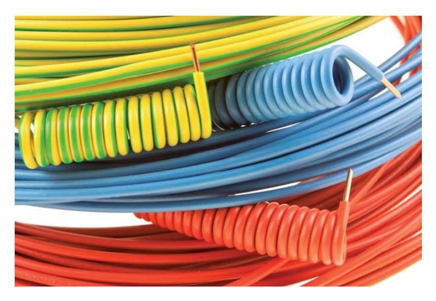
Conductores aislados
MULTÍMETRO
Multímetro, polímetro o téster. Este aparato permite realizar medidas tanto como voltímetro, amperímetro y como ohmímetro.
Aplicación
Verificaciones funcionales en las instalaciones eléctricas, por ejemplo comprobación de la tensión de alimentación, detección de tensión, comprobación de la carga en un circuito, verificaciones simples de continuidad, etc.
Características técnicas
Campo de medida mínimo para tensión alterna 50 Hz, de 1 V a 500 V.
Campo de medida mínimo para tensión continua de 100 mV a 500 V
Campo de medida mínimo para resistencia 0,1 Ω a 100 kΩ.
Campo de medida mínimo para intensidad alterna 50 Hz, de 0,5 A a 2 A.
Campo de medida mínimo para intensidad continua, de 0,2 A a 2 A.
Exactitud básica mejor o igual del 5% para todos los campos de medida indicados.
Requisitos de mantenimiento: no tiene requisitos específicos.
Requisitos de calibración:
Calibración en los campos de medida indicados de cada una de las cinco magnitudes (tensión continua y alterna, intensidad continua y alterna y resistencia).
Plazo recomendado: entre 12 y 24 meses, según la frecuencia de uso.
Criterios de aceptación y rechazo:
El plazo inicial de calibración será de 12 meses hasta que se disponga de un historial suficiente que justifique su ampliación progresiva hasta un máximo de 24 meses.
En la mayoría de los casos basta comprobar que las desviaciones certificadas en la calibración serán menores que la exactitud básica especificada en las características técnicas, ya que la incertidumbre de calibración debe ser pequeña (menor de la cuarta parte de la exactitud básica especificada).
Cuando la incertidumbre de calibración no sea menor de la cuarta parte de la exactitud básica especificada para el equipo el criterio de aceptación
será comprobar si la suma de las desviaciones certificadas en la calibración (en valor absoluto) más la incertidumbre es menor que esta exactitud básica.
Observaciones:
No tiene que ser necesariamente un equipo individual, sino que puede venir integrado en un equipo multifunción denominado comprobador de baja tensión.
Puede tener un campo de medida ampliado hasta 20 A tanto en intensidad continua como en alterna, en cuyo caso haría también las funciones de pinza amperimétrica para medida de alta intensidad.
Como medidor de tensión puede hacer también las funciones de detector de tensión.
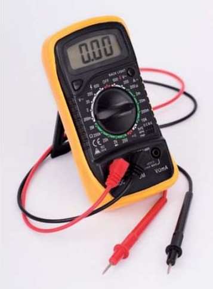
Multímetro
TENAZA AMPERIMÉTRICA
Tenaza amperimétrica o pinza amperimétrica para la medida de alta intensidad
Aplicación:
Verificaciones funcionales en las instalaciones eléctricas, por ejemplo comprobación de la carga en un circuito.
Características técnicas:
Campo de medida mínimo para intensidad alterna 50 Hz, de 2 A a 20 A.
Campo de medida mínimo para intensidad continua, de 2 A a 20 A.
Exactitud básica mejor o igual del 5% para todos los campos de medida indicados.
Requisitos de mantenimiento
No tiene requisitos específicos.
Requisitos de calibración
Calibración en los campos de medida indicados, tanto en intensidad continua como en intensidad alterna.
Plazo recomendado: entre 12 y 24 meses, según la frecuencia de uso.
Criterios de aceptación y rechazo
El plazo inicial de calibración será de 12 meses hasta que se disponga de un historial suficiente que justifique su ampliación progresiva hasta un máximo de 24 meses.
En la mayoría de los casos basta comprobar que las desviaciones certificadas en la calibración serán menores que la exactitud básica especificada en las características técnicas, ya que la incertidumbre de calibración debe ser pequeña (menor de la cuarta parte de la exactitud básica especificada).
Cuando la incertidumbre de calibración no sea menor de la cuarta parte de la exactitud básica especificada para el equipo el criterio de aceptación será comprobar si la suma de las desviaciones certificadas en la calibración (en valor absoluto) más la incertidumbre es menor que esta exactitud básica.
Observaciones
No tiene que ser necesariamente un equipo individual, sino que puede venir integrado en un equipo multifunción denominado comprobador de baja tensión.
Si el multímetro digital tiene su campo de medida ampliado hasta 20 A, tanto en corriente continua como en corriente alterna, puede desempeñar también las funciones de la pinza amperimétrica.
En ocasiones una pinza amperimétrica para la medida de alta intensidad puede realizar las funciones de pinza amperimétrica detectora de fugas.
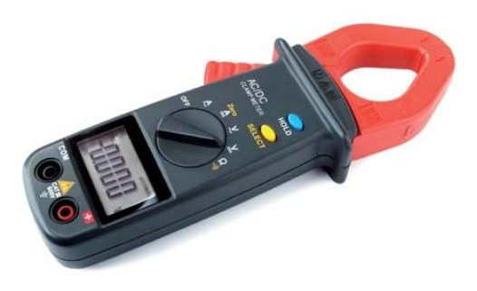
Tenaza amperimétrica
TENAZA AMPERIMÉTRICA PARA DETECTAR FUGAS
Tenaza o pinza amperimétrica detectora de fugas.
Aplicación
Detección de fugas en los circuitos para comprobar que su valor es menor que la mitad de la sensibilidad de los interruptores diferenciales.
Localización de circuitos o receptores en defecto.
Pruebas de los relés de control de aislamiento de sistemas IT.
Características técnicas
Campo de medida mínimo para intensidad alterna 50 Hz, de 5 mA a 1A.
Resolución mejor o igual de 1 mA
Exactitud básica mejor o igual del (10% +1mA) para todo el campo de medida.
Requisitos de mantenimiento
No tiene requisitos específicos.
Requisitos de calibración
Calibración en todo el campo de medida indicado a 50 Hz.
Plazo recomendado: entre 12 y 24 meses, según la frecuencia de uso.
Criterios de aceptación y rechazo
El plazo inicial de calibración será de 12 meses hasta que se disponga de un historial suficiente que justifique su ampliación progresiva hasta un máximo de 24 meses.
En la mayoría de los casos basta comprobar que las desviaciones certificadas en la calibración serán menores que la exactitud básica especificada en las características técnicas, ya que la incertidumbre de calibración debe ser pequeña (menor de la cuarta parte de la exactitud básica especificada).
Cuando la incertidumbre de calibración no sea menor de la cuarta parte de la exactitud básica especificada para el equipo el criterio de aceptación será comprobar si la suma de las desviaciones certificadas en la calibración (en valor absoluto) más la incertidumbre es menor que esta exactitud básica.
Observaciones
No tiene que ser necesariamente un equipo individual, sino que puede venir integrado en un equipo multifunción denominado comprobador de baja tensión, o integrado en la tenaza de medida de alta intensidad.
Importante
La tenaza amperimétrica para detectar fugas se diferencia en que su precisión debe ser mucho mayor para permitir detectar fugas de mucha menor intensidad. En secciones posteriores se comentará las diferencias en la medición para cada una de ellas.
GENERADOR DE ALTA TENSIÓN
Generador de alta tensión para ensayo de rigidez dieléctrica
Aplicación
Comprobación del aislamiento durante la puesta en marcha de las instalaciones, mediante el ensayo de rigidez dieléctrica en corriente alterna, 1 minuto, según ITC-BT-19.
Características técnicas
Generador de corriente alterna de alta tensión a 50 Hz.
Generación de tensión regulable entre 1500 V y 2000 V.
Exactitud básica mejor o igual del 10% para todo el campo de funcionamiento.
Requisitos de mantenimiento
No tiene requisitos específicos.
Requisitos de calibración
Calibración para tensiones generadas, como mínimo en los puntos de 1500 V, 1800 V y 2000 V, 50 Hz.
Plazo recomendado: entre 12 y 24 meses, según la frecuencia de uso.
Criterios de aceptación y rechazo:
El plazo inicial de calibración será de 12 meses hasta que se disponga de un historial suficiente que justifique su ampliación progresiva hasta un máximo de 24 meses.
En la mayoría de los casos basta comprobar que las desviaciones certificadas en la calibración serán menores que la exactitud básica especificada en las características técnicas, ya que la incertidumbre de calibración debe ser pequeña (menor de la cuarta parte de la exactitud básica especificada).
Cuando la incertidumbre de calibración no sea menor de la cuarta parte de la exactitud básica especificada para el equipo el criterio de aceptación será comprobar si la suma de las desviaciones certificadas en la calibración (en valor absoluto) más la incertidumbre es menor que esta exactitud básica.
Observaciones
No tiene que ser necesariamente un equipo individual, sino que puede venir integrado en un equipo multifunción denominado comprobador de baja tensión.
MEDIDOR DE RESISTENCIA DE CONTINUIDAD
Medidor de resistencia de continuidad.
Aplicación
Medida de la continuidad y del valor de la resistencia del circuito de puesta a tierra, así como de las uniones equipotenciales.
Características técnicas
Campo de medida mínimo de 0,2 Ω a 20 Ω.
Resolución mejor o igual de 0,01 Ω.
Debe funcionar mediante un generador interno de tensión de salida entre 4 y 24 V, que funcione en corriente continua o en corriente alterna, capaz de inyectar una intensidad de medida mayor de 200 mA en el campo de medida más bajo.
Si el generador es de corriente continua el instrumento debe realizar la medida con cambio de polaridad.
Exactitud para la medida de resistencia, mejor o igual del 30 %.
Hojas de chequeo
Requisitos de mantenimiento
No tiene requisitos específicos.
Requisitos de calibración
Calibración en todo el rango de medida de resistencia.
Plazo recomendado: entre 12 y 24 meses, según la frecuencia de uso.
Criterios de aceptación y rechazo:
El plazo inicial de calibración será de 12 meses hasta que se disponga de un historial suficiente que justifique su ampliación progresiva hasta un máximo de 24 meses.
En la mayoría de los casos basta comprobar que las desviaciones certificadas en la calibración serán menores que la exactitud básica especificada en las características técnicas, ya que la incertidumbre de calibración
debe ser pequeña (menor de la cuarta parte de la exactitud básica especificada).
Cuando la incertidumbre de calibración no sea menor de la cuarta parte de la exactitud básica especificada para el equipo el criterio de aceptación será comprobar si la suma de las desviaciones certificadas en la calibración (en valor absoluto) más la incertidumbre es menor que esta exactitud básica.
Observaciones
No tiene que ser necesariamente un equipo individual, sino que puede venir integrado en un equipo multifunción denominado comprobador de baja tensión.
Si el instrumento no tiene un sistema automático de compensación de la resistencia de las puntas de prueba, se debe hacer dicha compensación antes de efectuar las medidas.
Norma de referencia para el fabricante del equipo: UNE-EN 61557-4
COMPROBADOR DE INTERRUPTORES DIFERENCIALES
Comprobador de interruptores diferenciales.
Aplicación
Comprobación de la característica de funcionamiento intensidad tiempo de los interruptores diferenciales y medida de la tensión de contacto.
Características técnicas
Capacidad de prueba de diferenciales de 10-30-100-300-500 mA, inyectando intensidades x1/2; x1, x2, x5 para cada tipo de diferencial.
La prueba de inyección de intensidad para el valor de x1/2 durará al menos 200ms.
Exactitud mejor del ±10% para la medida del valor de la intensidad diferencial de operación.
Capacidad de medida de la tensión de contacto entre 1V y 60 V
Exactitud en la medida de la tensión de contacto mejor del 0/+20%.
Capacidad de medida del tiempo de disparo del diferencial entre 40 ms y 500ms.
Exactitud en la medida del tiempo de disparo del diferencial mejor de ±10 % en todo el campo de medida.
Requisitos técnicos
No tiene requisitos específicos.
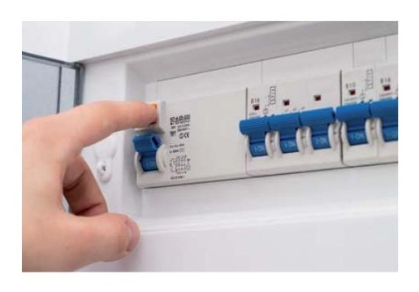
Interruptor Diferencial
Requisitos de calibración
Calibración como medidor de intensidad en las distintas posiciones de funcionamiento, con corriente senoidal (diferenciales tipo AC).
Calibración como medidor del tiempo de disparo.
Calibración como medidor de la tensión de contacto.
Plazo recomendado: entre 12 y 24 meses, según la frecuencia de uso.
Criterios de aceptación y rechazo:
El plazo inicial de calibración será de 12 meses hasta que se disponga de un historial suficiente que justifique su ampliación progresiva hasta un máximo de 24 meses.
En la mayoría de los casos basta comprobar que las desviaciones certificadas en la calibración serán menores que la exactitud básica especificada en las características técnicas, ya que la incertidumbre de calibración debe ser pequeña (menor de la cuarta parte de la exactitud básica especificada).
Cuando la incertidumbre de calibración no sea menor de la cuarta parte de la exactitud básica especificada para el equipo el criterio de aceptación será comprobar si la suma de las desviaciones certificadas en la calibración (en valor absoluto) más la incertidumbre es menor que esta exactitud básica.
Observaciones
Estos equipos son generalmente capaces de medir también un valor aproximado de la resistencia de puesta a tierra RA en sistemas TT, sin necesidad de picas auxiliares y sin provocar el disparo de los diferenciales a través de la medida de la resistencia de bucle de defecto. En caso de que el instrumento cuente con esta función también se debería calibrar.
No tiene que ser necesariamente un equipo individual, sino que puede venir integrado en un equipo multifunción denominado comprobador de baja tensión.
Norma de referencia para el fabricante del equipo: UNE-EN 61557-6
MEDIDOR DE IMPEDANCIA DE BUCLE
Medidor de impedancia de bucle
Aplicación
Medida de la impedancia de bucle de defecto con objeto de determinar si la corriente de defecto prevista es lo suficientemente alta para garantizar el funcionamiento de las protecciones de máxima corriente (fusibles o interruptores magnetotérmicos).
Estas medidas son necesarias cuando el sistema de protección contra los contactos indirectos sea por corte automático de alimentación mediante dispositivos de protección de máxima corriente (fusibles o interruptores automáticos). Se utiliza generalmente en redes de distribución del tipo T-N (y en redes I-T para el segundo defecto). Consultar como referencia la ITC-BT-24 del Reglamento.
Características técnicas
Capacidad de medida de la impedancia de bucle de defecto (para defecto fase-tierra), también puede incorporar otras capacidades de medida tal y como se indica en el apartado de observaciones.
Campo de medida mínimo para la impedancia de bucle de defecto entre 0 Ω y 200 Ω. Resolución mejor o igual de 0,1Ω.
Exactitud en la medida de la impedancia de bucle mejor de ±30 % en todo el campo de medida.
Estos instrumentos pueden calcular mediante la aplicación de una fórmula el valor de la corriente de cortocircuito prevista en la instalación, para un defecto fase tierra.
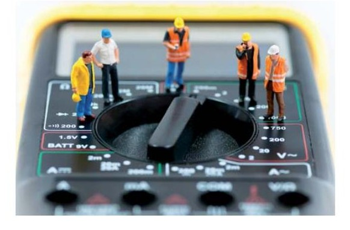
Mediciones eléctricas
Requisitos de mantenimiento
No tiene requisitos específicos.
Requisitos de calibración
Calibración como medidor de impedancia de bucle con un valor nominal de calibración mínimo de 1Ω, y para valores superiores hasta cubrir todo el campo de medida de impedancia.
Plazo recomendado: entre 12 y 24 meses, según la frecuencia de uso.
Criterios de aceptación y rechazo
El plazo inicial de calibración será de 12 meses hasta que se disponga de un historial suficiente que justifique su ampliación progresiva hasta un máximo de 24 meses.
En la mayoría de los casos basta comprobar que las desviaciones certificadas en la calibración serán menores que la exactitud básica especificada en las características técnicas, ya que la incertidumbre de calibración debe ser pequeña (menor de la cuarta parte de la exactitud básica especificada).
Cuando la incertidumbre de calibración no sea menor de la cuarta parte de la exactitud básica especificada para el equipo el criterio de aceptación será comprobar si la suma de las desviaciones certificadas en la calibración (en valor absoluto) más la incertidumbre es menor que esta exactitud básica.
Observaciones
Estos equipos pueden tener capacidad de medida de la impedancia de línea (para un bucle fase-neutro en los sistemas monofásicos y para un bucle fase-fase o fase-neutro en los trifásicos).
No tiene que ser necesariamente un equipo individual, sino que puede venir integrado en un equipo multifunción denominado comprobador de baja tensión. Con esta medida se puede calcular la intensidad de cortocircuito prevista, para comprobar si el poder de corte de los dispositivos fusibles o interruptores automáticos instalados es suficiente.
Norma de referencia para el fabricante del equipo: UNE-EN 61557-3
COMPROBADOR DE QUIRÓFANOS
Comprobador de quirófanos
Aplicación
Comprobación del dispositivo de vigilancia del nivel de aislamiento de los quirófanos.
Medida de la resistencia de continuidad en el circuito de conexiones equipotenciales y en el circuito de puesta a tierra de los quirófanos para verificar los límites establecidos en la ITC-BT-38.
Características técnicas
Resistencia variable como mínimo dentro del rango de 50 kΩ a 100 kΩ para permitir la verificación del dispositivo permanente de control de aislamiento del quirófano.
Campo de medida mínimo para la impedancia de tierra entre 0 Ω y 1 Ω.
Exactitud en la medida de impedancia de pequeño valor mejor de ± 20 % en todo el campo de medida.
Para la medida de resistencia de continuidad de los circuitos equipotencial y de puesta a tierra el comprobador debe ser capaz de inyectar una corriente de al menos 10 A, con objeto de minimizar los errores de medida para valores bajos de impedancia. Las medidas se podrán realizar tanto en corriente continua como alterna. Si se realizan en alterna la medida será una impedancia.
Requisitos de mantenimiento
No tiene requisitos específicos.
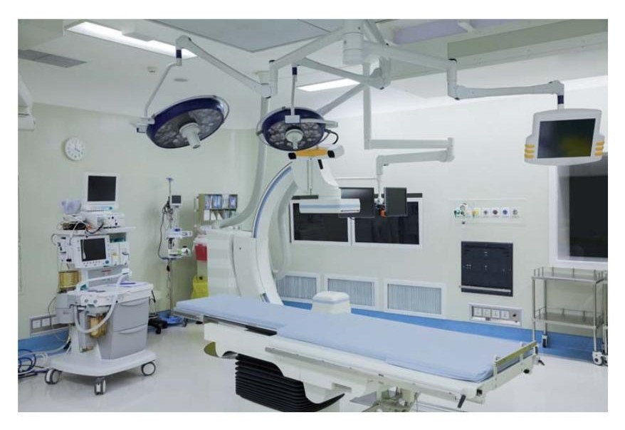
Quirófano
Requisitos de calibración:
Calibración como medidor de resistencia de pequeño valor en todo el rango de medida incluyendo los valores de 50 mΩ, 100 mΩ y 200 mΩ.
La función de potenciómetro o resistencia variable no necesita calibración ya que su valor se puede medir durante la prueba, con cualquier otro equipo, por ejemplo con el multímetro digital.
Plazo recomendado: entre 12 y 24 meses, según la frecuencia de uso.
Criterios de aceptación y rechazo:
El plazo inicial de calibración será de 12 meses hasta que se disponga de un historial suficiente que justifique su ampliación progresiva hasta un máximo de 24 meses.
En la mayoría de los casos basta comprobar que las desviaciones certificadas en la calibración serán menores que la exactitud básica especificada en las características técnicas, ya que la incertidumbre de calibración debe ser pequeña (menor de la cuarta parte de la exactitud básica especificada).
Cuando la incertidumbre de calibración no sea menor de la cuarta parte de la exactitud básica especificada para el equipo el criterio de aceptación será comprobar si la suma de las desviaciones certificadas en la calibración (en valor absoluto) más la incertidumbre es menor que esta exactitud básica.
Observaciones
No tiene que ser necesariamente un equipo individual, sino que puede venir integrado en un equipo multifunción más amplio denominado comprobador de baja tensión.
LUXÓMETRO
Luxómetro
Aplicación
Comprobación del nivel de iluminación (iluminancia) exigido por el Reglamento para el alumbrado de emergencia en locales de pública concurrencia y luces de emergencia.
Características técnicas
Rango de medida entre 0,5 hasta 500 lux.
Resolución mejor o igual a 0,1 lux.
Exactitud básica mejor o igual del 5%
Requisitos de mantenimiento
No tiene requisitos específicos.
Requisitos de calibración:
Calibración como iluminancímetro al menos entre 0,5 y 500 lux.
Plazo recomendado: entre 12 y 24 meses, según la frecuencia de uso.
Criterios de aceptación
El plazo inicial de calibración será de 12 meses hasta que se disponga de un historial suficiente que justifique su ampliación progresiva hasta un máximo de 24 meses.
En la mayoría de los casos basta comprobar que las desviaciones certificadas en la calibración serán menores que la exactitud básica especificada en las características técnicas, ya que la incertidumbre de calibración debe ser pequeña (menor de la cuarta parte de la exactitud básica especificada).
Cuando la incertidumbre de calibración no sea menor de la cuarta parte de la exactitud básica especificada para el equipo el criterio de aceptación será comprobar si la suma de las desviaciones certificadas en la calibración (en valor absoluto) más la incertidumbre es menor que esta exactitud básica.
Observaciones
No tiene que ser necesariamente un equipo individual, sino que puede venir integrado en un equipo multifunción más amplio denominado comprobador de baja tensión.
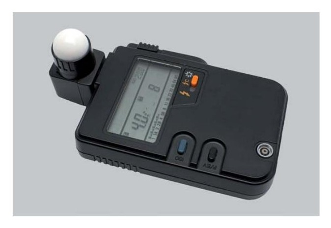
Luxómetro
5.9. Procedimientos de medición
Los procedimientos de medición será la descripción del modo en que deben llevarse a cabo las mediciones que requieren los ensayos de medida que se exigen para las verificaciones de las instalaciones.
Los ensayos y el orden de ensayos son:
Medida de la continuidad de los conductores de protección y de las uniones equipotenciales principales y suplementarias. Medida de la resistencia de puesta a tierra Medida de la resistencia de aislamiento de la instalación Medida de la resistencia de aislamiento de suelos y paredes. Ensayo dieléctrico de la instalación. Medida de corrientes de fuga Medida de la impedancia de bucle Medida de la tensión de contacto y comprobación de los interruptores diferenciales Comprobación de la secuencia de fases
Medida de la continuidad de los conductores de protección y de las uniones equipotenciales principales y suplementarias.
Esta medición se efectúa mediante un ohmímetro que aplica una intensidad continua del orden de 200 mA con cambio de polaridad, y equipado con una fuente de tensión continua capaz de generar de 4 a 24 voltios de tensión continua en vacío. Los circuitos probados deben estar libres de tensión. Si la medida se efectúa a dos hilos es necesario descontar la resistencia de los cables de conexión del valor de resistencia medido.
En el esquema se ilustra la medida del valor de la resistencia óhmica del conductor de protección que une dos bases de enchufe, mediante un comprobador de baja tensión multifunción, válido para otros tipos de comprobaciones, no obstante, un simple ohmímetro con medida de resistencia a dos hilos sería suficiente para esta verificación
Medida de la resistencia de un conductor de protección
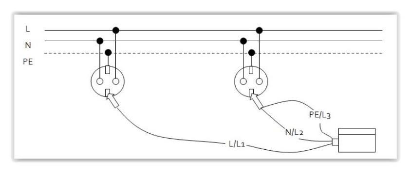
Con la lectura del ohmímetro, y supuesta conocida la longitud de los conductores se puede deducir la sección.
La ITC-BT-38, aplicable a quirófanos y salas de intervención, requiere unos límites especiales para los valores de resistencia de los conductores de protección y de los conductores utilizados para las uniones de equipotencialidad. En concreto la impedancia entre el embarrado común de puesta a tierra de cada quirófano o sala de intervención y las conexiones a masa, o los contactos de tierra de las bases de toma de corriente, no deberá exceder de 0,2 ohmios. Además todas las partes metálicas accesibles han de estar unidas al embarrado de equipotencialidad mediante conductores de cobre aislados e independientes con una impedancia entre estas partes y el embarrado de equipotencialidad que no deberá exceder de 0,1 ohmios.
Medida de la resistencia de puesta a tierra
Las condiciones de medida y su periodicidad se indican en la ITC-BT-18.
Por la importancia que ofrece, desde el punto de vista de la seguridad cualquier instalación de toma de tierra, deberá ser obligatoriamente comprobada por el director de la obra o instalador autorizado en el momento de dar de alta la instalación para su puesta en marcha o en funcionamiento.
Personal técnicamente competente efectuará la comprobación de la instalación de puesta a tierra al menos anualmente, en la época en la que el terreno esté más seco. Para ello, se medirá la resistencia de tierra, y se repararán con carácter urgente los defectos que se encuentren.
En los lugares en que el terreno no sea favorable a la buena conservación de los electrodos, estos y los conductores de enlace entre ellos hasta el punto de puesta a tierra, se pondrán al descubierto para su examen, al menos una vez cada cinco años.
Estas medidas se efectúan mediante un telurómetro, que inyecta una intensidad de corriente alterna conocida, a una frecuencia superior a los 50 Hz, y mide la caída de tensión de forma que el cociente entre la tensión medida y la corriente inyectada nos da el valor de la resistencia de puesta a tierra.
La conexión se efectúa a tres terminales tal y como se indica en el esquema, de forma que la intensidad se inyecta entre E y H, y la tensión se mide entre S y ES. El electrodo de puesta a tierra está representado por RE, mientras que los otros dos electrodos hincados en el terreno son dos picas auxiliares de unos 30 cm de longitud que se suministran con el propio telurómetro. Los tres electrodos se deben situar en línea recta.
Medición de resistencia a tierra
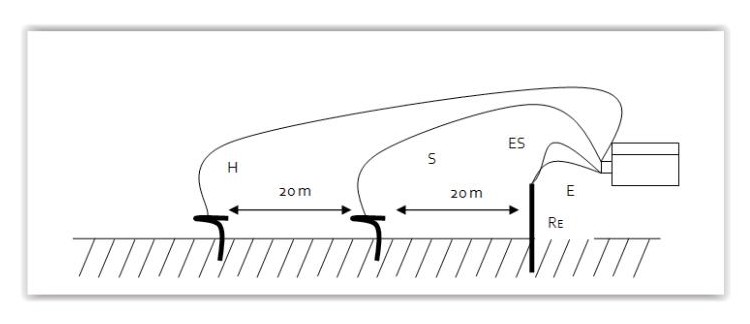
Durante la medida, el electrodo de puesta a tierra cuya resistencia a tierra (RE) se desea medir debe estar desconectado de los conductores de puesta a tierra. La distancia entre la sonda ( S ) y el electrodo de puesta a tierra ( E/ES ), al igual que la distancia entre ( S ) y la pica auxiliar ( H ) debe ser al menos de 20 metros. Los cables no se deben cruzar entre sí para evitar errores de medida por acoplamientos capacitivos.
La medida efectuada se puede considerar como correcta si cuando se desplaza la pica auxiliar (S) de su lugar de hincado un par de metros a izquierda y derecha en la línea recta formada por los 3 electrodos el valor de resistencia medido no experimenta variación.
En caso contrario es necesario ampliar la distancia entre los 3 electrodos de medida hasta que se cumpla lo anterior.
Mediante telurómetros que permiten una conexión a cuatro terminales se puede medir también la resistividad del terreno.
Medida de la resistencia de aislamiento de la instalación
Las instalaciones deberán presentar una resistencia de aislamiento al menos igual a los valores indicados en la tabla siguiente:
Valores mínimos de resistencia de aislamiento en instalación
| Muy Baja Tensión de Seguridad (MBTS) Muy Baja Tensión de protección (MBTP) | 250 | >=0,25 |
|---|---|---|
| Inferior o igual a 500 V, excepto caso anterior | 500 | >=0,5 |
| Superior a 500 V | 1000 | >=1,0 |
Este aislamiento se entiende para una instalación en la cual la longitud del conjunto de canalizaciones y cualquiera que sea el no de conductores que las componen no exceda de 100 metros. Cuando esta longitud exceda del valor anteriormente citado y pueda fraccionarse la instalación en partes
de aproximadamente 100 metros de longitud, bien por seccionamiento, desconexión, retirada de fusibles o apertura de interruptores, cada una de las partes en que la instalación ha sido fraccionada debe presentar la resistencia de aislamiento que corresponda según la tabla anterior.
Cuando no sea posible efectuar el fraccionamiento citado en tramos de 100 metros, el valor de la resistencia de aislamiento mínimo admisible será el indicado en la tabla 1 dividido por la longitud total de la canalización, expresada esta última en unidades de hectómetros. Oficina Técnica y Proyectos
Si las masas de los aparatos receptores están unidas al conductor neutro (redes TN), se suprimirán estas conexiones durante la medida, restableciéndose una vez terminada ésta.
Cuando la instalación tenga circuitos con dispositivos electrónicos, en dichos circuitos los conductores de fase y el neutro estarán unidos entre sí durante las medidas.
El aislamiento se medirá de dos formas distintas: en primer lugar entre todos los conductores del circuito de alimentación (fases y neutro) unidos entre sí con respecto a tierra (aislamiento con relación a tierra), y a continuación entre cada pareja de conductores activos. La medida se efectuará mediante un megóhmetro, que no es más que un generador de corriente continua, capaz de suministrar las tensiones de ensayo especificadas en la tabla anterior con una corriente de 1 mA para una carga igual a la mínima resistencia de aislamiento especificada para cada tensión.
Durante la primera medida, los conductores, incluido el conductor neutro o compensador, estarán aislados de tierra, así como de la fuente de alimentación de energía a la cual están unidos habitualmente. Es importante recordar que estas medidas se efectúan por tanto en circuitos sin tensión, o mejor dicho desconectados de su fuente de alimentación habitual, ya que en caso contrario se podría averiar el comprobador de baja tensión o megóhmetro. La tensión de prueba es la tensión continua generada por el propio megóhmetro.
La medida de aislamiento con relación a tierra, se efectuará uniendo a ésta el polo positivo del megóhmetro y dejando, en principio, todos los receptores conectados y sus mandos en posición “paro”, asegurándose que no existe falta de continuidad eléctrica en la parte de la instalación que se verifica se pondrán en posición de “cerrado” y los cortacircuitos fusibles instalados como en servicio normal a fin de garantizar la continuidad eléctrica del aislamiento. Todos los conductores se conectarán entre sí incluyendo el conductor neutro o compensador, en el origen de
la instalación que se verifica y a este punto se conectará el polo negativo del megóhmetro.
Cuando la resistencia de aislamiento obtenida resultara inferior al valor mínimo que le corresponda, se admitirá que la instalación es, no obstante correcta, si se cumplen las siguientes condiciones:
Cada aparato receptor presenta una resistencia de aislamiento por lo menos igual al valor señalado por la norma particular del producto que le concierna o en su defecto 0,5 Mfl.
Desconectados los aparatos receptores, la resistencia de aislamiento de la instalación es superior a lo indicado anteriormente.
La segunda medida a realizar corresponde a la resistencia de aislamiento entre conductores polares, se efectúa después de haber desconectado todos los receptores, quedando los interruptores y cortacircuitos fusibles en la misma posición que la señalada anteriormente para la medida del aislamiento con relación a tierra. La medida de la resistencia de aislamiento se efectuará sucesivamente entre los conductores tomados de dos a dos, comprendiendo el conductor neutro o compensador.
Para las instalaciones que empleen muy baja tensión de protección (MBTP) o de seguridad (MBTS) se deben comprobar los valores de la resistencia de aislamiento para la separación de esto circuitos con las partes activas de otros circuitos, y también con tierra si se trata de MBTS, aplicando en ambos casos los mínimos de la tabla 1 anterior.
Operarios en verificaciones
Medida de la resistencia de aislamiento de suelos y paredes.
Uno de los sistemas que se utiliza para la protección contra contactos indirectos en determinados locales y emplazamientos no conductores se basa en que, en caso de defecto de aislamiento básico o principal de la parte activa, se prevenga el contacto simultáneo con partes que puedan estar a tensiones diferentes, utilizando para ello suelos y paredes aislantes con una resistencia de aislamiento no inferior a:
50 kfl, si la tensión nominal de la instalación no es superior a 500 V; y
100 kfl, si la tensión nominal de la instalación es superior a 500 V.
Estas medidas de resistencia de aislamiento tienen una aplicación singular en las ITC-BT-27 y 38.
Según la ITC-BT-27 las bañeras y duchas metálicas deben considerarse partes conductoras externas susceptibles de transferir tensiones, y por tanto deben conectarse equipotencialmente al conductor de protección al que se conectarán también la puesta a tierra de las bases de corriente, las partes conductoras accesibles de los equipos de clase 1 que estén instalados en los volúmenes de protección 1, 2 y 3, así como cualquier otra canalización metálica que esté en el interior de estos volúmenes. Esta prescripción para bañeras y duchas metálicas no es aplicable si se demuestra que dichas partes están aisladas de la estructura y de otras partes del edificio, para lo cual la resistencia de aislamiento entre la superficie metálica de baños y duchas y la estructura del edificio debe ser como mínimo de 100 kfl.
Otro caso particular es la ITC-BT-38 sobre instalaciones eléctricas en quirófanos y salas de intervención que establece que sus suelos serán del tipo antielectrostático y su resistencia de aislamiento no deberá exceder de 1 Mfl, salvo que se asegure que un valor superior, pero siempre inferior a 100 Mfl, no favorezca la acumulación de cargas electrostáticas peligrosas.
La resistencia de aislamiento se debe medir con un megóhmetro entre un electrodo de unas dimensiones especificadas que se apoya sobre el suelo o la pared a medir y el conductor de protección de tierra de la instalación.
Para comprobar los valores anteriores deben hacerse al menos tres medidas en el mismo local, una de esas medidas estando situado el electrodo, aproximadamente a 1 m de un elemento conductor accesible en el local.
Las otras dos medidas se efectuarán a distancias superiores. Esta serie de tres medidas debe repetirse para cada superficie importante del local.
Se utilizará para las medidas un megóhmetro capaz de suministrar en vacío una tensión de unos 500 voltios de corriente continua, (1000 voltios si la tensión nominal de la instalación es superior a 500 voltios).
Se pueden utilizar dos electrodos de medida (el tipo 1, o el tipo 2), aunque es recomendable utilizar el tipo 1.
El electrodo de medida de tipo 1 está constituido por una placa metálica cuadrada de 250 mm de lado y un papel o tela hidrófila mojada y escurrida de unos 270 mm de lado que se coloca entre la placa y la superficie a ensayar. Durante las medidas se aplica a la placa una fuerza de 750 N o 250 N según se trate de suelo o paredes.
Medida de la resistencia de aislamiento de suelos o paredes
El electrodo de medida de tipo 2 está constituido por un triángulo metálico, donde los puntos de contacto con el suelo o pared están colocados próximos a los vértices de un triángulo equilátero. Cada una de las piezas de contacto que le sostiene, está formada por una base flexible que garantiza, cuando está bajo el esfuerzo indicado, un contacto íntimo con la superficie a ensayar de aproximadamente 900 mm2, presentando una resistencia inferior a 5000 fl. En este caso antes de efectuar las medidas la superficie a ensayar se moja o se cubre con una tela húmeda. Durante la medida, se aplica sobre el triángulo metálico una fuerza de 750 N o 250 N, según se trate de suelos o paredes.
Ensayo dieléctrico de la instalación.
Por lo que respecta a la rigidez dieléctrica de una instalación, ha de ser tal, que desconectados los aparatos de utilización (receptores), resista durante un minuto una prueba de tensión de 2U + 1000 voltios a frecuencia industrial (50 Hz), siendo U la tensión máxima de servicio expresada en voltios y con un mínimo de 1500 voltios. Este ensayo se realizará para cada uno de los conductores incluido el neutro o compensador, con relación a tierra y entre conductores, salvo para aquellos materiales en los que se justifique que haya sido realizado dicho ensayo previamente por el fabricante.
Este ensayo se efectúa mediante un generador de corriente alterna de 50 Hz capaz de suministrar la tensión de ensayo requerida.
Durante este ensayo los dispositivos de interrupción se pondrán en la posición de “cerrado” y los cortacircuitos fusibles instalados como en servicio normal a fin de garantizar la continuidad del circuito eléctrico a probar.
Este ensayo no se realizará en instalaciones correspondientes a locales que presenten riesgo de incendio o explosión.
Durante este ensayo, la corriente suministrada por el generador, que es la que se fuga a tierra del aislamiento, no será superior para el conjunto de la instalación o para cada uno de los circuitos en que ésta pueda dividirse a efectos de su protección, a la sensibilidad que presenten los interruptores diferenciales instalados como protección contra los contactos indirectos.
Medida de corrientes de fuga
Además de la prueba de corriente de fuga del apartado anterior es conveniente efectuar para cada uno de los circuitos protegidos con interruptores diferenciales la medida de corrientes de fuga, a la tensión de servicio de la instalación y con los receptores conectados. Los valores medidos deben ser igualmente inferiores a la mitad de la sensibilidad de los interruptores diferenciales instalados para protección de cada uno de los circuitos. Mediante este método es posible detectar un circuito o receptor que presente un defecto de aislamiento o que tenga una corriente de fugas superior a la de la sensibilidad de los interruptores diferenciales de la instalación, llegando en casos extremos a disparar el o los diferenciales de protección, en cuyo caso sería necesario puentearlos para poder localizar el circuito o receptor averiado.
La medida se efectúa mediante una tenaza amperimétrica de sensibilidad mínima de 1 mA, que se coloca abrazando los conductores activos (de
fase y neutro), de forma que la tenaza mide la suma vectorial de las corrientes que pasan por los conductores que y abraza, si la suma no es cero la instalación tiene una intensidad de fuga que circulará por los conductores de puesta a tierra de los receptores instalados aguas abajo del punto de medida. Este tipo de pinzas suele llevar un filtro que nos permite hacer la medida a la frecuencia de red (50 Hz) o para intensidades de alta frecuencia.
No hay que confundir la corriente de defecto con la corriente de fuga, ya que ésta última se da en mayor o menor medida en todo tipo de receptores en condiciones normales de funcionamiento, sobre todo en receptores que lleven filtros para combatir interferencias, como los formados por condensadores conectados a tierra. Un ejemplo son los balastos de alta frecuencia asociados a los tubos fluorescentes.
Medida de la impedancia de bucle
La medida del valor de la impedancia de bucle es necesaria para comprobar el correcto funcionamiento de los sistemas de protección basados en la utilización de fusibles o interruptores automáticos en sistemas de distribución TN, e IT principalmente.
Estos sistemas de protección requieren determinar la intensidad de cortocircuito prevista fase tierra, para comprobar que para ese valor de intensidad de cortocircuito el tiempo de actuación del dispositivo de protección de máxima intensidad es menor que un tiempo especificado. Este tiempo depende del esquema de distribución utilizado y de la tensión nominal entre fase y tierra, U0, de la instalación, tal y como se especifica en la ITC-BT-24.
Tiempos de interrupción máximos especificados para esquemas TN
| 230 | 0,4 |
|---|---|
| 400 | 0,2 |
| > 400 | 0,1 |
Tiempos de interrupción máximos especificados para esquemas IT (después de un primer defecto)
| Tensión nominal de la | Tiempos de | interrupción (s) |
|---|---|---|
| instalación (U0/U) | Neutro no distribuido | Neutro distribuido |
| 230/400 | 0,4 | 0,8 |
| 400/690 | 0,2 | 0,4 |
| 580/1000 | 0,1 | 0,2 |
Zs es la impedancia del bucle de defecto, incluyendo la de la fuente, la del conductor activo hasta el punto de defecto y la del conductor de protección, desde el punto de defecto hasta la fuente. Para el esquema TN del siguiente figura se tendría que: Zs = (R1+R2) + j (XL1 + XL2).
Esquema: Cálculo de Zs
|Z_s |=√(R1+R2)2+(XL1+XL2)2
U0 es la tensión nominal entre fase y tierra, valor eficaz en corriente alterna.
Icc es la corriente prevista de cortocircuito a tierra (Icc = U0 / Zs)
Ia es la corriente de actuación del dispositivo de protección por máxima intensidad.
Se debe cumplir que: Ia ≤ Icc, además la característica tiempo-corriente del interruptor debe garantizar su actuación en tiempos inferiores a los establecidos en las tablas anteriores.
Concepto de impedancia del bucle de la instalación
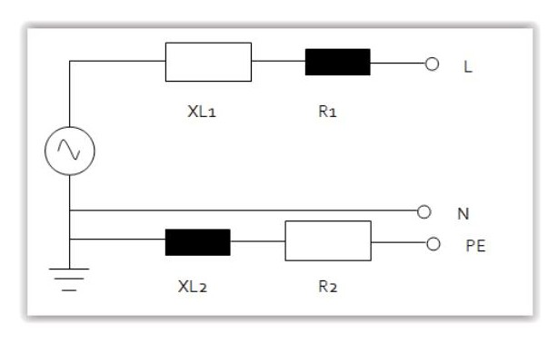
Los medidores de impedancia de bucle son instrumentos que miden directamente el valor de esta impedancia y que calculan mediante un procesador el valor de la intensidad de cortocircuito prevista. Durante este tipo de medidas es necesario puentear provisionalmente cualquier interruptor diferencial instalado aguas arriba del punto de prueba. Esta medida se debe efectuar con la instalación en tensión. Como estas medidas se efectúan a do hilos es necesario descontar la resistencia de los cables de conexión de la medida.
Además de la medida de la impedancia de bucle entre fase y tierra (L-PE), también es posible mediante estos instrumentos determinar la impedancia de bucle entre cualquier fase y el conductor neutro (L-N), así como entre dos fases cualesquiera para instalaciones trifásicas.
El principio de funcionamiento de un medidor de impedancia de bucle consiste en cargar el circuito en el punto de prueba mediante una resistencia calibrada que se conecta durante un tiempo muy breve del orden de milisegundos, de forma que circula una intensidad conocida. El instrumento mide la tensión tanto antes como durante el tiempo que circula la corriente, siendo la diferencia entre ambas, la caída de tensión en el circuito ensayado. Finalmente el cociente entre la caída de tensión y el valor de la intensidad de carga nos da el valor de la impedancia de bucle.
Medida de la tensión de contacto y comprobación de los interruptores diferenciales
Cuando el sistema de protección contra los choques eléctricos está confiado a interruptores diferenciales, como es habitual cuando se emplean sistemas de distribución del tipo T-T se debe cumplir la siguiente condición:
Ia∙RA≤U
Donde:
RA es la suma de las resistencias de la toma de tierra y de los conductores de protección de masas.
Ia es la corriente diferencial – residual asignada del diferencial
U es la tensión de contacto límite convencional (50, 24V u otras, según los casos).
Para garantizar la seguridad de la instalación se tienen que dar dos condiciones, la primera que la tensión de contacto que se pueda presentar en la instalación en función de los diferenciales instalados sea menor que el valor límite convencional (50 V ó 24 V), y la segunda que los diferenciales funcionen correctamente.
a) Medida de la tensión de contacto
En la práctica los medidores de impedancia de bucle que sirven también para medir el valor de la tensión de contacto no suelen ser capaces de medir únicamente el valor de la resistencia RA, sino que miden el valor de la impedancia de todo el bucle indicado en la figura anterior incluyendo la resistencia de tierra del centro de transformación ( RB ), de forma que se obtiene un valor superior al valor buscado de RA. Finalmente el medidor multiplica este valor por la intensidad asignada del interruptor diferencial que nosotros hayamos seleccionado para obtener así la tensión de contacto:
Uc=Zs∙Ia
Uc tensión de contacto calculada por el medidor
Zs impedancia de bucle de defecto (mayor que la resistencia de puesta a tierra RA)
Ia intensidad diferencial asignada que hemos programado en el medidor.
Como la impedancia de bucle es siempre mayor que la de puesta a tierra el valor de la tensión de contacto medida siempre será mayor que el valor real y estaremos del lado de la seguridad.
Obviamente la instalación es segura si la tensión de contacto medida es menor que la tensión de contacto límite convencional.
b) Comprobación de los interruptores diferenciales.
La comprobación de diferenciales requiere de un aparato capaz de inyectar a través del diferencial bajo prueba una corriente de fugas especificada y conocida que según su valor deberá hacer disparar al diferencial. Para hacer la prueba el comprobador se conecta en cualquier base de enchufe aguas abajo del diferencial en ensayo, estando la instalación en servicio. Además cuando dispare el diferencial el comprobador debe ser capaz de medir el tiempo que tardó en disparar desde el instante en que se inyectó la intensidad de fugas.
Normalmente estos equipos inyectan una corriente senoidal, pero para comprobar algunos diferenciales especiales a veces es necesario también que sean capaces de inyectar corriente alterna rectificada de media onda o una corriente continua.
Las pruebas habituales para comprobar el funcionamiento de un diferencial del tipo general son las siguientes:
› Se inyecta una intensidad mitad de la intensidad diferencial residual asignada, con un ángulo de fase de corriente respecto de la onda de tensión de 0o, y el diferencial no debe disparar.
› Se repite l prueba anterior con un ángulo de fase de 180o y el diferencial no debe disparar.
› Se inyecta una intensidad igual la intensidad diferencial residual asignada, con un ángulo de fase de corriente respecto de la onda de tensión de 0o, y el diferencial debe disparar en menos de 200 ms.
› Se repite la prueba anterior con un ángulo de fase de 180o y el diferencial debe disparar en menos de 200 ms.
› Se inyecta una intensidad igual al doble de la intensidad diferencial residual asignada, con un ángulo de fase de corriente respecto de la onda de tensión de 0o, y el diferencial debe disparar en menos de 150 ms.
› Se repite la prueba anterior con un ángulo de fase de 180o y el diferencial debe disparar en menos de 150 ms.
› Se inyecta una intensidad igual a cinco veces la intensidad diferencial residual asignada, con un ángulo de fase de corriente respecto de la onda de tensión de 0o, y el diferencial debe disparar en menos de 40 ms.
› Se repite la prueba anterior con un ángulo de fase de 1 180o y el diferencial debe disparar en menos de 40 ms.
Para los diferenciales selectivos del tipo S las pruebas tienen otros límites de aceptación.
Comprobación de la secuencia de fases
Esta comprobación se efectúa mediante un equipo específico o utilizando un comprobador multifunción de baja tensión que tenga esta capacidad. Esta medida es necesaria por ejemplo si se van a conectar motores trifásicos, de forma que se asegure que la secuencia de fases es directa antes de conectar el motor.
5.10. Elaboración de informes
Los informes son documentación que tiene por objeto poner en conocimiento una serie de asuntos o cuestiones sucedidas.
Concretamente la RAE lo define como:
Definición
Informe: Descripción, oral o escrita, de las características y circunstancias de un suceso o asunto.
En general todo informe debe contener una estructura tal que permita guardar la información durante un periodo de tiempo largo, permitiendo que su lectura en cualquier momento actual o futuro permita comprender no sólo la información del asunto que se pretendía explicar sino también las circunstancias y escenario en que se redactó y el destino o finalidad que perseguía.
Para ello, todo informe debe contar al menos con los siguientes datos:
Datos identificativos: de la organización, del redactor, de la instalación, etc.
Objeto: Indicará con qué finalidad se realiza el informe.
Encargo: ¿Quién encarga el informe? También se indicará si el encargo del informe se debe a una realización de oficio, periódica o responde a una exigencia producida por algún agente de la actividad.
Normativa aplicable: Convienen hacer constar la Normativa vigente sobre la materia que se trata, así como las normas de referencia consultadas para la realización del informe.
Antecedentes: Circunstancias previas y escenario en que se da la realización del informe.
Alcance: Establecerá los límites en que se persigue que actúe el informe.
Cuerpo: Contenido del informe propiamente dicho, con la información del suceso, diagnósticos realizados, ensayos, pruebas, medias, etc. Igualmente puede incluir otras partes como valoraciones, mediciones, planos, fotografías, etc.
Conclusiones: Resumen de las conclusiones de la información y alcance de los objetivos del informe.
Por otra parte los informes dentro organizaciones de instalaciones eléctricas los podremos clasificar en función de su destino como:
Informes internos para la organización.
Informes realizados para el cumplimiento de exigencias Reglamentarias o información a la Administración.
Informes con destino al usuario final de las instalaciones
Informes con destino a otros agentes: compañías, agencias de seguros, etc.
Informes internos para la organización
Las organizaciones pueden requerir la realización de informes sobre la actividad que se ejecuta, procesos de montaje, estados de determinadas obras o montajes, etc.
Informes realizados para el cumplimiento de exigencias Reglamentarias o información a la Administración.
Los instaladores deberán cumplir con todas las exigencias reglamentarias que la Administración les impone. Pueden requerirse por tanto informes que tengan por destino justificar información para lograr cumplir con las exigencias de éstas.
Algunas de estas obligaciones son:
“Emitir los certificados de instalación o mantenimiento, en su caso...
Notificar a la Administración competente los posibles incumplimientos reglamentarios de materiales o instalaciones, que observasen en el desempeño de su actividad. En caso de peligro manifiesto, darán cuenta inmediata de ello a los usuarios y, en su caso, a la empresa suministradora, y pondrá la circunstancia en conocimiento del Órgano competente de la Comunidad Autónoma en el plazo máximo de 24 horas...
...Mantener al día un registro de las instalaciones ejecutadas o mantenidas.
...Conservar a disposición de la Administración, copia de los contratos de mantenimiento al menos durante los 5 años inmediatos posteriores a la finalización de los mismos.”
Para lo cual puede ser necesaria la redacción de informes de diagnósticos de incumplimientos detectados en sus instalaciones, registro de las actuaciones así como las informaciones necesarias para archivar junto con ellas de cara a posibles justificaciones de los certificados emitidos, instalaciones mantenidas, etc.
Informes con destino al usuario final de las instalaciones
Serán informes de este tipo todos aquellos que la organización realiza a solicitud de sus clientes o cara a la mejora del uso de las instalaciones o mejoras de las mismas. En aquellos informes que tiene por destino final el propio usuario de viviendas se recomienda incorporar consejos para una mejor utilización de
la instalación que como hemos constituye además un importante método de control de los puntos críticos y de seguridad para las instalaciones.
Algunos de estos consejos de seguridad en la utilización que se aconsejan acercar a los usuarios son:
1 Antes de efectuar su Póliza de Abono (Contrato del Suministro de Energía Eléctrica) con la Empresa Suministradora, asesórese con el Instalador Electricista Autorizado, la propia Suministradora o profesional competente para elegir la tarifa la potencia más conveniente para Ud.
2 No sobrepasar simultáneamente la potencia contratada con la Empresa
Suministradora de energía, puesto que se le disparará el ICP (Interruptor de Control de Potencia), dejándole a usted sin servicio en toda la vivienda o local. Desconecte algún aparato o lámpara (los de más potencia) y vuelva a accionar el ICP. También puede suceder que, estando desconectados todos los aparatos y lámparas, siga disparándose el ICP; entonces, desconecte el IGA (Interruptor de Control de Potencia), y vuelva a conectar el ICP y si aún así se dispara, avise a su Empresa Suministradora, porque la avería está en el ICP.
3 Si se dispara el ID (Interruptor Diferencial) en el cuadro DGMP (Dispositivos
Generales de Mando y
Protección), actúe de la forma siguiente:
A) Desconecte todos los IAs (Interruptores Automáticos) y conecte el ID.
B) Vaya conectando uno a uno todos los IAs y el Circuito que le haga disparar nuevamente el ID es donde existe la avería. En este caso, desconecte los aparatos y lámparas de dicho Circuito, y vuelva a accionar el IA. Si no se dispara, la avería es de los aparatos. Si se dispara nuevamente tiene la avería en este Circuito, por lo que tendrá que avisar a su Instalador Autorizado. Deje desconectado dicho IA y funcione con el resto de la instalación.
4 Si se le dispara un PIA (Pequeño Interruptor Automático) en el cuadro
DGMP (Dispositivos Generales de Mando y Protección), puede ser debido a estos dos casos:
A) Que el Circuito que protege dicho IA está sobrecargado, en cuyo caso deberá ir desconectando aparatos o lámparas, hasta conseguir reponer de nuevo el citado IA.
B) Que en el Circuito, o en los aparatos y lámparas conectadas a él, se haya producido un cortocircuito. En este caso, desconecte los aparatos y lámparas de dicho circuito, y vuelva a accionar el IA. Si no se dispara, la avería es de algún aparato. Si se dispara nuevamente, tiene la avería en este Circuito, por lo que tendrá que avisar a su Instalador Autorizado. Deje desconectado dicho IA y funcione con el resto de la instalación.
5 Compruebe con periodicidad (una vez al año por lo menos) y por medio
de su Instalador Autorizado la Red de Tierra de su edificio, vivienda o local.
6 Compruebe con periodicidad (una vez al mes, por lo menos) su ID (Interruptor Diferencial). Pulse el botón de prueba y si no dispara es que está averiado, por tanto, no está Ud. protegido contra contactos indirectos. Avise a su Instalador Autorizado.
7 Manipule todos los aparatos eléctricos, incluso el teléfono, SIEMPRE con
las manos secas y evite estar descalzo o con los pies húmedos. No manipular nunca en el cuadro DGMP (Dispositivos Generales de Mando y Protección), con las manos o pies mojados (La humedad hace que los materiales se vuelvan buenos conductores de la electricidad).
8 Antes de taladrar en una pared o techo, compruebe el trazado de las Canalizaciones Eléctricas, en la “Documentación de su Instalación”. Podría llegar a electrocutarse al atravesar éstas.
9 En el caso de manipular algún aparato eléctrico, desconecte previamente
éste de la Instalación Eléctrica. Si esto no fuese posible, desconecte el IA del Circuito correspondiente. Si esto tampoco fuese posible, porque no se le pudiese identificar, desconecte el IGA del cuadro de DGMP. Compruebe SIEMPRE que no existe Tensión.
10 No usar aparatos eléctricos con cables pelados, clavijas y enchufes rotos,
etc.
11 No hacer varias conexiones en un mismo enchufe (no utilizar ladrones o
clavijas múltiples).
12 Cuando un receptor (electrodoméstico, maquinaría, lámpara, etc.) le dé
“CALAMBRE”, es porque hay derivación de corriente, a través de los hilos conductores, en algún elemento metálico de éstos. Normalmente, se dispara el ID (Interruptor Diferencial). Hay que localizar el aparato, o la parte de la instalación donde se produce la anomalía, y aislar debidamente el contacto con la parte metálica; además, se debe desconectar el IA del Circuito correspondiente, por lo que tendrá que avisar a su
Instalador Autorizado. Deje desconectado dicho IA y funcione con el resto de la instalación.
13 Al desconectar los aparatos de las Tomas no tire el cordón o hilo, sino de
la clavija
14 No se puede enchufar cualquier aparato en cualquier Toma de Corriente.
Cada aparato tiene una potencia determinada. Como cada Toma de Corriente tiene la suya. Vea la “Documentación de su Instalación” y adecue los aparatos a enchufar. Si la potencia del aparato es superior a los Amperios que permite enchufar la Toma de Corriente, se disparará el IA del Circuito correspondiente, además, puede quemarse la base de enchufe, la clavija e incluso la instalación.
15 No olvide que no debe intervenir en su instalación para modificarla, ya que
sólo los Instaladores Autorizados están capacitados para ello, según Art. 19 y 20 RD. 842/2002, en donde se documenta cómo se ha de llevar a cabo dicha actuación. Si la intervención no la realiza un Instalador Autorizado, daría lugar a la pérdida de garantías y, además, las Compañías de Seguros no se harían responsables en caso de siniestro o percance.
Toma y clavija domésticas
UD5 Lo más importante
Previo a la puesta en marcha de una instalación deben realizarse las verificaciones e inspecciones Reglamentarias oportunas. La verificación la realizará el instalador mientras las inspecciones las harán Organismos de Control Autorizados y/o la Administración.
Además los instaladores deberán realizar protocolos para poner en funcionamiento por primera vez la instalación (puesta en marcha) y asegurar el correcto funcionamiento de la instalación y los equipos (pruebas funcionales)
Los instaladores tienen también la obligación de realizar para todas sus instalaciones un certificado de la instalación y tramitarlo ante la administración (boletín). En ellos se harán constar las verificaciones e inspecciones realizadas.
La energía eléctrica es una fuente de accidentes de alta gravedad en sus consecuencias. Deben tomarse muy en cuenta las medidas de seguridad especialmente en los trabajos de puesta en marcha y pruebas de las instalaciones.
Algunos análisis como el de los PCC (Puntos de control crítico) nos ayudarán a valorar y determinar qué puntos son críticos para la seguridad humana de las actuaciones y de la instalación.
Los PCC detectados deben ser controlados o eliminados a través de la realización de análisis de los mismos buscando las mejores soluciones adaptadas a cada caso.
Otros estudios de los métodos de control serán necesarios para garantizar que no se cae en una rutina que pueda descuidar determinadas fases de los trabajos. Métodos como el ¿Qué pasa sí...? nos ayudarán en estos estudios.
Los equipos de medidas son elementos esenciales para poder ensayar las instalaciones y garantizar un buen funcionamiento y seguridad. Estos elementos deben someterse a mantenimientos y/o calibraciones para garantizar que sus medidas cumplen las exigencias.
Los procedimientos para la realización de medidas y ensayos son de vital importancia para el correcto cumplimiento normativo y de la seguridad por lo que conviene regirnos por los procedimientos de referencia establecidos.
La información de las actuaciones debe mantener la base documental suficiente para que exista la información acerca de las instalaciones, sus incidencias, sus normas de uso, etc.
UD5 Autoevaluación
1. ¿Qué diferencia una inspección de una verificación?
a. La OCA.
b. El tiempo que duran.
c. El agente que la realiza.
d. El momento en que se realiza.
2. ¿Qué llamamos puesta en servicio de una instalación o equipo?
a. La prueba de funcionalidad de todas sus funciones.
b. La primera vez que se utiliza para lo que fue diseñado.
c. La verificación de la conexión correcta.
d. La medición de los valores de los parámetros que presenta.
3. ¿Puede realizarse el certificado de la instalación antes de las verificaciones por ensayo?
a. Si.
b. No.
c. Solo en Alta Tensión.
d. Solo en baja tensión.
4. La gravedad del accidente eléctrico dependerá de ...
a. La tensión del contacto.
b. La intensidad que recorre el cuerpo.
c. La distancia a la fuente de tensión.
d. La hora del día en que ocurra.
5. La búsqueda de PCC se realizará sobre...
a. Los peligros más probables.
b. Los riesgos más graves.
c. Los más relevantes de la evaluación peligros contra fases.
d. Ninguna de las anteriores.
6. En el análisis de los PCC puede actuarse para el control de los mismos
mediante:
a. Mejoras en las medidas de control.
b. Cambios que permitan volver a estudiar el árbol de decisión para
eliminar el PCC.
c. Reforzar la seguridad para que dejen de ser críticos.
d. Todas las anteriores.
7. Un método para el estudio de los métodos de control será el método:
a. ¿Cada cuanto ocurre...?.
b. ¿Qué podemos cambiar para...?.
c. ¿Qué pasa si...?.
d. Simulaciones.
8. ¿Qué equipo de medida empleamos para la medición de la resistencia
a tierra?:
a. Telurómetro.
b. Multímetro.
c. Medidor de aislamiento.
d. Tenaza amperimétrica.
9. ¿Para qué elementos es siempre importante la correcta secuencia de
las fases?:
a. Para iluminación.
b. Para los motores trifásicos.
c. Para las tomas.
d. Para los circuitos a muy baja tensión.
10. ¿Los instaladores tienen la obligación de mantener información de las
instalaciones ejecutadas ?:
a. No.
b. Sí.
c. Sí, pero termina la obligación cuando se tramita el certificado.
d. Sólo si llevan el mantenimiento de ellas.
Área: electricidad y electrónica
Glosario
Nodo: Representación gráfica de un vértice de un grafo, en forma de círculo que representa un hito o estado del proyecto.
Arco: Línea que une dos nodos o vértices. Se conoce también por enlace. Pueden estar orientados en forma de flechas.
ADM: Sistema de representación gráfica en que los nodos representan hitos o sucesos del proyecto y las flechas (arcos) representan actividades.
PDM: Sistema de representación de redes de grafos en las que los nodos se representan en tablas y constituyen las actividades del proyectos, mientras los arcos representan relaciones.
Gantt: Tipo de diagrama que representa las actividades mediante barras escaladas en formato horizontal (habitual) o vertical.
Recurso: Bien que permite a la organización producir bienes o servicios. Pueden ser de tipo material o tipo trabajo.
Asignación: Proceso por el que se imputa un determinado recurso a una determinada actividad.
Plannig: Planificación de un proyecto o montaje que representa en función del tiempo pormenores planificados del proceso de montaje del proyecto.
Protocolo: Conjunto de normas/reglas que constituyen los requisitos básicos de un determinado proceso o procedimiento.
Plan de calidad: Programa que determina en una obra los detalles de qué, cómo y cuando deben realizarse operaciones que tienen por destino garantizar el cumplimiento de requisitos de calidad del proyecto.
Punto de inspección: Momento significante de una fase de obra o lugar de obra que resulta de interés desde el punto de vista del control productivo o de la calidad.
Compartimentación: Proceso por el cual se desfragmenta un proyecto en unidades de actividades, tareas o subtareas que permitirán su realización.
Secuenciación: Ordenamiento en que las actividades de un proyecto deben darse con respecto a otras para permitir la correcta realización del proyecto.
Predecesora: Relación que existe entre una actividad y todas aquellas que deben realizarse total o parcialmente antes que ella.
Sucesora: Relación que existe entre una actividad y todas aquellas que deben realizarse total o parcialmente después que ella.
Actividad o tarea: Precio que un usuario o un consumidor paga por un servicio público al Estado o a la Administración.
Descompuestos: Línea de uno o varios elementos de tipo mano de obra, maquinaria, material u otros que se require para la realización de una unidad de medición de una partida de obra.
Reglas de almacenamiento: Reglas por las cuales se rigen las entradas y salidad de materiales a un almacén: FIFO, LIFO, FEFO, etc.
Replanteo: Acción de trasladar la información del proyecto a la obra real a través de indicaciones o referencias sobre el elemento de campo que se está instalando.
Stock: Un artículo en stock es aquél que una organización custodia en almacenamiento con objeto de ser empleado posteriormente en algún proceso productivo de la misma.
Área: electricidad y electrónica
Anexo
Área: electricidad y electrónica
No EXPEDIENTE
Datos administrativos TITULAR DE LA INSTALACIÓN N.I.F.
EMPLAZAMIENTO DE LA INSTALACIÓN
Dirección
Uso
Datos técnicos CARACTERÍSTICAS GENERALES DE LA INSTALACIÓN
2
ACOMETIDA (Según información de la empresa distribuidora)
Punto de conexión (3 4 mm2 Material (5)
C.G.P. o C/C DE SEGURIDAD
LÍNEA GENERAL DE ALIMENTACIÓN DERIVACIÓN INDIVIDUAL
2 mm2 Material (5)
MÓDULO DE MEDIDA
PROTECCIÓN MAGNETOTÉRMICA / DIFERENCIAL
PUESTA A TIERRA
2 2
MEMORIA REALIZADA POR EL INSTALADOR AUTORIZADO
o
MEMORIA REALIZADA POR TÉCNICO COMPETENTE
o
El que suscribe D./Da, como autor/a de la Memoria Técnica de Diseño cuyos datos figuran reseñados en la misma, declara que cumple el Reglamento Electrotécnico para Baja Tensión (RD 842/2002)
DIA
MADRID 10
a de de 20
Nombre y firma del instalador o Técnico cualificado
Realizado por P.L.C.Madrid®
NOTAS:
(1) Instalación: N (Nuevo), A (Ampliación-Reforma), CN (Cambio Nombre), CT (Cambio Tensión)
(3) C.T. (Centro de Transformación); R.B.T. (Red de Baja Tensión)
(6) En Cuarto de Centralización; En Interior; En fachada
(4) Aérea, Subterránea, Interior (7) Envolvente, panelable, armario independiente (2) Según tabla de referencia de la carpeta informativa (5) Material; Cu (Cobre), Al (Aluminio)
PREVISIÓN DE CARGAS PARA INSTALACIÓN DE ENLACE (Según ITC-BT-10)
| VIVIENDAS | |||||||||||||
|---|---|---|---|---|---|---|---|---|---|---|---|---|---|
| Grado Electrificación | Tipo Vivienda | para | Pot.Máxima Prevista Tipo vivienda | No | Viviendas | Media Potencias | Aritmética Máximas | Coeficiente Simultaneidad | Carga Total |
| Tarifa Nocturna | kW kW kW | kW | 1 Igual NaViviendas | kW | |||||||||
|---|---|---|---|---|---|---|---|---|---|---|---|---|---|
| SERVICIOS | GENERALES | 0,00 | |||||||||||
| Pot. Prevista Ascensores | Pot. Prevista Frío/Calor | Prevista | Pot.Prevista Presión | Presión | Grupos | Pot. Alumbrado | Prevista | Pot.Prevista Piscinas | Pot.Prevista Otros (R.I.T.I.) | Potencia Prevista Total (Suma) | |||
| 0,00 | |||||||||||||
| GARAJE | 0,00 | ||||||||||||
| Potencia Calculo | Real (X) | Superficie Total (Y) | Potencia Otros Sistemas (Z) | Potencia Total Z+((X*Y)/1000) | |||||||||
| 2 | W/m2 | m2 | |||||||||||
| 2 | W/m2 | m2 | |||||||||||
| LOCALES | COMERCIALES Y/O | OFICINAS | Y/O | INDUSTRIALES | 0,00 | ||||||||
| Instalación | Potencia Mínima | Calculo | Oficina | o Local | Potencia Calculo | Real (X) | Superficie Total (Y) | Potencia Otros Sistemas (Z) | Potencia Total N*[Z+((X*Y)/1000)] | ||||
| Local Comerc. | W/m2 | m2 | |||||||||||
| (Min. 3,45 kW | W/m2 100 | W/m2 | W/m2 | m2 | |||||||||
| Por Local) | W/m2 | m2 | |||||||||||
| Oficinas | W/m2 | m2 | |||||||||||
| (Min. 3,45 kW | W/m2 100 | W/m2 | W/m2 | m2 | |||||||||
| Por Oficina) | W/m2 | m2 | |||||||||||
| Industrias | W/m2 | m2 | |||||||||||
| (Min. 10,35 kW | W/m2 125 | W/m2 | W/m2 | m2 | |||||||||
| Por Local) | W/m2 | m2 | |||||||||||
| OTRAS INSTALACIONES | INDUSTRIALES, | AGRARIAS | O | DE SERVICIOS | 0,00 | ||||||||
| Denominación | de la Instalación | Potencia | Alumbrado | Prevista | Potencia Fuerza | Prevista Otras | Potencia Prevista Instalaciones | Potencia Prevista Total (Suma) | |||||
| 0,00 | |||||||||||||
| 0,00 | |||||||||||||
| 0,00 | |||||||||||||
| 0,00 | |||||||||||||
| CARGA | TOTAL | PREVISTA EN L.G.A. | (A+B+C+D+E): | 0,00 0,00 |
PRESUPUESTO
Desglose Presupuesto Puesta Tierra
Presupuesto
Presupuesto Punto Medida
Presupuesto Derivs. Indivs.
Presupuesto Instals.Interior Prepto. Otros TOTAL
L.G.A.
Realizado por P.L.C.Madrid®
0,00
0,00
0,00
0,00 0,00 0,00 0,00 0,00 0,00
MEMORIA TÉCNICA DE DISEÑO (3/6) COMUNIDAD DE MADRID RESUMEN DATOS TECNICOS DATOS TÉCNICOS DE LAS LINEAS GENERALES DE ALIMENTACIÓN
Pot.Max.
Pot.Max Admisible Fase/Sección Material (Cu o Al)
Tipo Aislamiento Longitud Caída Tensión
Calculo
2
2
La caída de Tensión será de 0,5 % ó 1%, los conductores serán de Cobre o Aluminio Unipolares, de aislamiento 0,6/1 kV, Entubados o en Bandeja cerrada o en Conductos cerrados según la ITC-BT-14. La línea General de Alimentación no podrá superar una Potencia Máxima de 150 kW, salvo que en el Cuarto de Contadores se instalen Armarios de Distribución.
DATOS TÉCNICOS PUNTO DE MEDIDA Y PROTECCIÓN
DATOS TÉCNICOS DERIVACIONES INDIVIDUALES
Pot. Máxima
Pot. Máxima
Admisible Fases/ Sección Material (Cu o Al)
Tipo Aislamiento
Caída Tensión
Fusible de Seguridad
Prevista
Máxima
2
2
2
2
DATOS TECNICOS DISPOSITIVOS GENERALES MANDO Y PROTECCIÓN
Derivación
Fases/ Sección D.I. Del Suministro
Tipo
2
2
2
2
TIPO INSTALACIÓN
(2) ITC-BT-26: E.T.F. Empotrado en Tubo Flexible
(1) ITC-BT-20: T.P. Bajo Tubo Protector
E.T.C. Empotrado en Tubo Curvable
F.D.P. Fijado Directamente sobre Pared
S.T.C. Superficial en Tubo Curvable
ENTR. Enterrado
S.T.R. Superficial en Tubo rígido
D.E.E. Directamente Empotrados en Estructura
S.C.P. Superficial en Canal protector cerrado
AERO Aéreo
S.C.P.F. Superficial en Canalización Prefabricada
I.H.C. Interior Huecos de la Construcción
C.P. Bajo Canales Protectores
MOLD. Bajo moldura
BANDJ. En Bandeja
C.E.P. en Canalización Eléctrica Prefabricada
Realizado por P.L.C.Madrid®
| (A) Diferencial Intensidad | |||||||||||||||||||||||||||||||
|---|---|---|---|---|---|---|---|---|---|---|---|---|---|---|---|---|---|---|---|---|---|---|---|---|---|---|---|---|---|---|---|
| (A) I.G.A. Intensidad | |||||||||||||||||||||||||||||||
| (A) Seguridad Fusible Intensidad | |||||||||||||||||||||||||||||||
| (kW) Instalada Total Potencia | |||||||||||||||||||||||||||||||
| (kW) Admisible Máxima Potencia | |||||||||||||||||||||||||||||||
| (V) Máxima Tensión de Caída | |||||||||||||||||||||||||||||||
| (m) Máxima Longitud | |||||||||||||||||||||||||||||||
| Bandejas o Tubos de No | |||||||||||||||||||||||||||||||
| (mm) Bandejas Sección o Tubos Diámetro | |||||||||||||||||||||||||||||||
| cm) x (cm Conductos Sección | |||||||||||||||||||||||||||||||
| 3/6 Página Ver (1) (ITC-BT-20) Instalación Tipo | |||||||||||||||||||||||||||||||
| (kV) Aislamiento Nominal Tensión | |||||||||||||||||||||||||||||||
| Al) o (Cu Material | |||||||||||||||||||||||||||||||
| (mm2) Sección x Conductores No | |||||||||||||||||||||||||||||||
| (A) Cálculo de Intensidad | |||||||||||||||||||||||||||||||
| (V) Cálculo de Tensión | |||||||||||||||||||||||||||||||
| (kW) Cálculo de Potencia |
MEMORIA TÉCNICA DE DISEÑO (4/6) COMUNIDAD DE MADRID
DERIVACIONES INDIVIDUALES
RESUMEN CALCULO INSTALACIONES DE ENLACE
| básica | |||||||||||||||
|---|---|---|---|---|---|---|---|---|---|---|---|---|---|---|---|
| Electrificación | |||||||||||||||
| Viviendas | |||||||||||||||
| Elevada | |||||||||||||||
| Electrificación | |||||||||||||||
| Generales | |||||||||||||||
| Servicios | Alumbrado espacios | Comunes | |||||||||||||
| Piscinas | |||||||||||||||
| Red Interna | Telecomunicaciones | ||||||||||||||
| Otros | |||||||||||||||
| Instalaciones | Industriales |
Realizado por P.L.C.Madrid®
BAJA TENSIÓN
MEMORIA TÉCNICA DE DISEÑO (6/6) COMUNIDAD DE MADRID
MEMORIA DESCRIPTIVA
DOCUMENTACIÓN QUE SE ADJUNTA: (marcar en cuadro)
En el caso de viviendas individuales, se presentará esquema unifilar. En los edificios de viviendas y demás casos, se presentará esquema unifilar, planos y croquis del emplazamiento. En edificios de viviendas quedarán perfectamente definidos; Caja general de protección, línea repartidora, fusibles de seguridad, aparatos de medida, derivaciones individuales, dispositivos privados de mando y protección, instalaciones interiores de las viviendas tipo con sus características y la sección de conductores. De la centralización de contadores y de las viviendas tipo se presentará siempre planos de planta.
Los datos que se recogen se tratarán informáticamente o se archivarán con el consentimiento del ciudadano, quien tiene derecho a decidir quién puede tener sus datos, para qué los usa, solicitar que los mismos sean exactos y que se utilicen para el fin que se recogen, con las excepciones contempladas en la legislación vigente. Para cualquier información relacionada con esta materia puede dirigirse al teléfono de información administrativa 012. Si usted tiene alguna sugerencia que permita mejorar este impreso le rogamos nos la hagan llegar a la Consejería de Presidencia, D.G. de Calidad de los Servicios y Atención al ciudadano.
Realizado por P.L.C.Madrid®